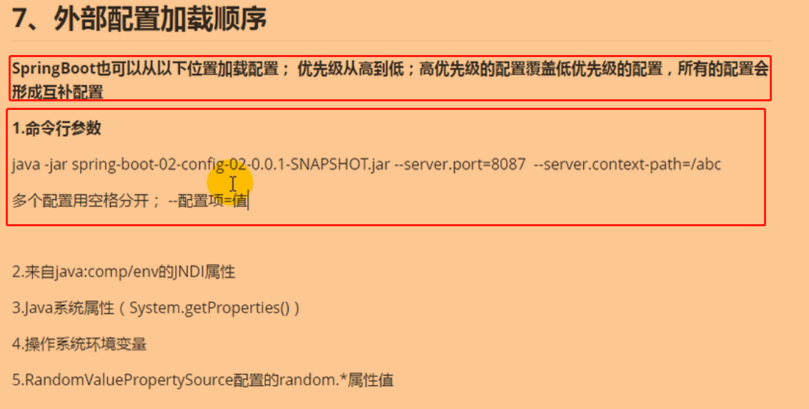
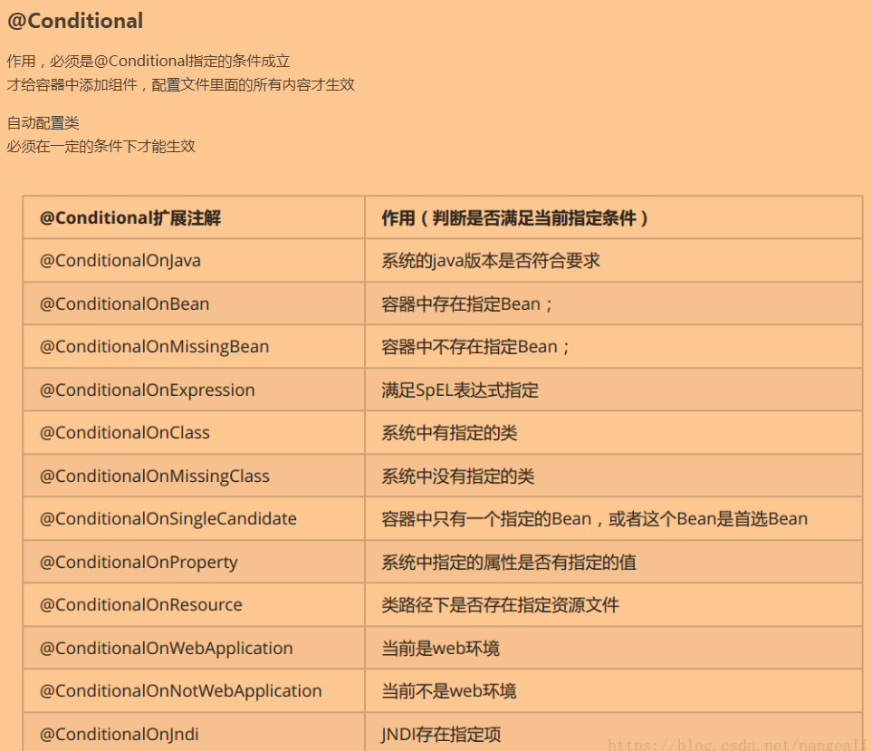
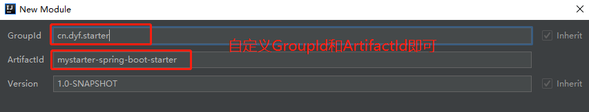
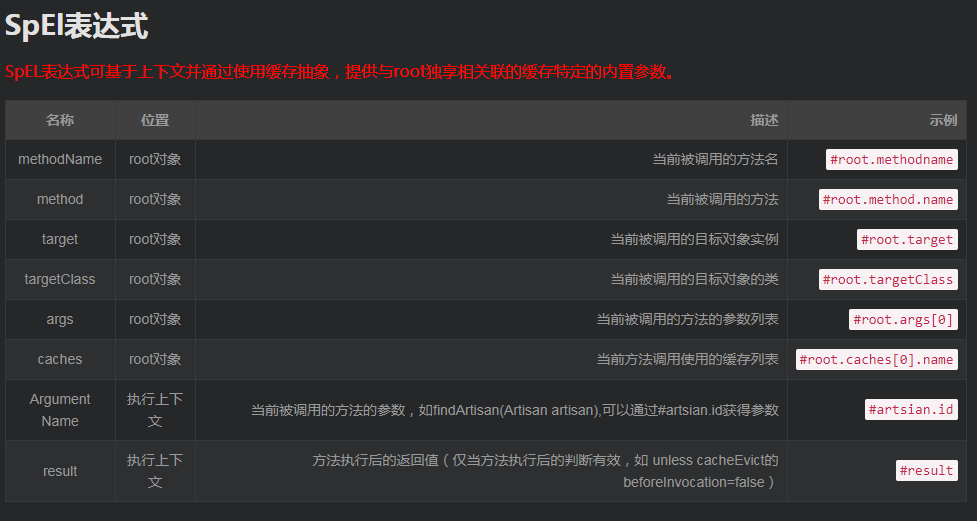
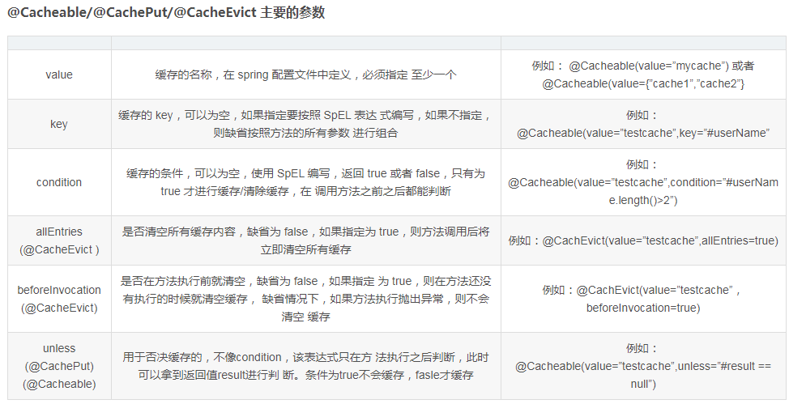
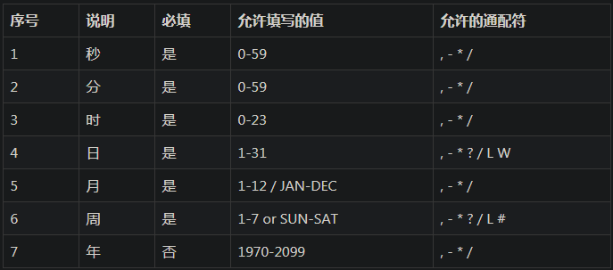

SpringBoot–学习笔记(包含SpringBoot视频)
Lesson1 SpringBoot概述
NO1.1 SpringBoot简介与入门
SpringBoot用于快速开发单个微服务项目。
- SpringBoot：
- 定义：SpringBoot是简化了Spring应用开发的一个框架；是整个Spring技术栈的一个大整合，J2EE开发的一站式解决方案(SpringCloud则是分布式整体解决方案)；
- 优点：
- 快速创建独立运行的Spring项目以及与主流框架集成；
- 使用嵌入式的Servlet容器，应用无需打成WAR包；
- starters(启动器)自动依赖与版本控制；
- 大量的自动配置，简化开发，也可修改默认值；
- 无需配置XML，无代码生成，开箱即用；
- 与云计算的天然集成等等。
两种方式创建SpringBoot工程：
普通方式创建SpringBoot工程：
创建普通的Maven项目，在pom.xml中继承父工程依赖；
<groupId>org.springframework.boot</groupId> <artifactId>spring-boot-starter-parent</artifactId> <version>2.1.8.RELEASE</version> 说明： 一.groupid和artifactId被统称为“坐标”，是为了保证项目唯一性而提出的；groupId一般分为多个段，这里只说两段，第一段为域，第二段为公司名称；域又分为org、com、cn等等许多，其中org为非营利组织，com为商业组织，cn为中国；如，apache公司的 tomcat项目，这个项目的groupId是org.apache，它的域是org(因为tomcat是非营利项目)，公司名称是apache，artigactId是tomcat； 二.在使用Maven创建基于SpringBoot的项目后，如果父工程中SpringBoot版本为1开头的，则JDK版本最高为JDK7，尽量使用JDK7，所以需要在pom.xml中修改JDK的版本，修改为1.7；如果父工程中SpringBoot版本为2开头的，则JDK版本最低为JDK8，尽量使用JDK8；导入2开头的版本时，已经自动修改了JDK为JDK8，不需要我们手动修改JDK；但是要添加一个属性 <maven-jar-plugin.version>，如下所示；然后右键项目，选择Maven选项，选择Update Project，更新项目(IDEA中选择Reimport就行了)，SpringBoot项目基本创建成功； <properties> <maven-jar-plugin.version>3.1.1</maven-jar-plugin.version> </properties> 三、父项目spring-boot-starter-parent往上找，发现这个父项目还依赖另一个父项目spring-boot-starter-dependencies，而这个父项目中的<properties>标签中则管理了大量的依赖版本，这也是为什么我们导入依赖之后，不需要指定版本号的原因。导入Web的依赖(其实就是管理好的JAR包)，该依赖的作用是导入了Web模块正常运行所依赖的组件，并且使得启动项目之后会挂起而不会启动后就立马将项目关闭；
<!-- Web依赖 --> <dependencies> <dependency> <groupId>org.springframework.boot</groupId> <artifactId>spring-boot-starter-web</artifactId> </dependency> </dependencies>编写启动类；
//这是SpringBoot的启动类，从这里启动SpringBoot @SpringBootApplication public class App { public static void main(String[] args) { SpringApplication.run(app.class, args); } } 注意： 一、启动类一定要加注解：@SpringBootApplication，因为@SpringBootApplication是SprnigBoot项目的核心注解，目的是开启自动配置，并注明SpringBoot的启动类； 二、main方法体里的“SpringApplication.run(启动类.class, args);”，启动类.class中的启动类指的是当前类名，如例子中的启动类.class则为app.class； 三、当Maven项目中的某一个JAR包报错出异常时，只需要到Maven的本地仓库(我的仓库是E:\repository)下，找到报错的JAR包所对应的上一级文件夹，把整个对应的文件夹删除，然后右键项目，选择Maven选项，选择Update Project，更新项目(IDEA中选择Reimport就行了)，就会自动下载缺失的JAR包了。注意：启动类不能直接放在main/java下。启动类所在的包是最顶部的包，也就是说你创建好包的总路径之后，第一个创建的就是SpringBoot启动类，且启动类和controller、service、domain等等这些包必须是同一级别的，而不能放入前面说的任意一个包之中。
在IDEA中使用Maven创建SpringBoot工程(推荐)；
点击菜单栏中的file，选择new，选择project或在项目启动的时候选择new create a new project；出现如下对话框；
设置工程信息；
选择要导入的依赖；
完成创建；
工程创建后的目录结构；

- @RestController注解和@Controller注解的区别；
- @RestController注解：相当于@Controller+@ResponseBody两个注解的结合，将结果封装成json格式的数据然后再返回，且不需要在方法前面加@ResponseBody注解了，但使用@RestController这个注解，就不能返回jsp、html页面；
- @Controller注解：想要返回json数据，可以跟@ResponseBody注解一起使用；想要进行视图的跳转，则返回字符串路径；
Lesson2 SpringBoot基础
NO2.1 SpringBoot的配置文件
SpringBoot的配置文件常用的主要有两种：一种是properties文件，另一种则是yml(或者yaml)文件。
SpringBoot中允许的配置文件形式：properties配置文件、yml(或者yaml)配置文件，也就是说文件结尾分别为
.properties和.yml(或.yaml)。properties配置文件：主要以键值对的形式进行配置；
name=dengyanfeiyml配置文件(或yaml配置文件)：主要以缩进的形式来表示层级关系。
优点：
- yml中解决了中文乱码问题，也不需要我们去特别的注意；
- 支持
${}形式的随机数获取、配置文件里的某个属性的值获取等等。如，${random.int}、${random.uuid}，${person.name:aaa}，这表示如果没有获取到person.name的值，就使用aaa作为内容替代进去。
基本语法格式：
参数名:空格 参数值，即冒号后面紧跟空格，空格后再跟参数值；#普通数据形式： name: ddd #注意： 一、字符串不用加引号。 二、如果要使用引号，双引号中如果有特殊字符，则不会转义该特殊字符，特殊字符会发生作用；单引号则相反，单引号会转义特殊字符，使得特殊字符作为内容的一部分输出 //---------------------------------------- #对象数据形式：分为行内写法和yml写法两种可选 #行内写法 person: {name: dyf, sex: 男} #yml写法 person: name: dyf sex: 男 //---------------------------------------- #数组形式：空格之后，用-表示数组的每一个元素，同样也分为行内写法和yml写法 #行内写法 pets: [cat,pig,dog] #yml写法 pets: -cat -pig -dog //---------------------------------------- #~表示null student: ~ //---------------------------------------- #使用yml文件也可以给Dog对象赋值 dog: #这里使用了松散绑定，意思就是这里写的last-name，与Dog类中的lastName进行了绑定，即last-name中的-后面的字母变成了大写，这就是松散绑定 last-name: wangcai age: 6 #创建Dog类，并在类上使用@Component注解和@ConfigurationProperties(prefix = "dog")，前者注解的作用是告诉SpringBoot这是一个组件，扫描这个类并生成bean对象，后者注解的作用是将配置文件中的值赋值到这个注解下的类所生成的对象中去，简单说就是赋值的作用，prefix属性，用来匹配配置文件中指定的值的，即prefix属性后面的值，配置文件中必须要出现，否则会赋值失败 @Component @ConfigurationProperties(prefix = "dog") //将配置文件中dog的配置，绑定到这个这个类所产生的对象中去，简单的说就是赋值 public class Dog { private String lastName; private Integer age; ....get、set、toString方法.... } 注意： 一、如果application.properties全局配置文件中，没有dog类需要的对象，则使用@PropertySource注解用于加载指定的配置文件(如，dog.properties文件)，将需要的dog对象赋值到Dog类中去； 二、@Import注解用来导入@Configuration注解的配置类、声明@Bean注解的bean方法、导入ImportSelector的实现类或导入ImportBeanDefinitionRegistrar的实现类，也就是为它们创建Bean对象以便容器引入；@ImportResource是引入spring配置文件.xml。
SpringBoot配置文件的位置：SpringBoot启动会扫描以下位置的application.yml或者 application.properties文件作为SpringBoot的默认配置文件。
注意：配置文件的有优先级，高优先级的配置会覆盖低优先级的配置，所有的配置会形成互补配置(意思就是，除了都有的配置部分，高优先级里没配置的，恰好低优先级里又配置了的，则也会使用低优先级里的配置，这就是互补配置)。项目内的配置文件位置(配置文件的读取优先级按顺序从高到低)；
file:./config/：即根目录下的config目录下。这个位置的配置文件会最先读取；file:./：即根目录下；classpath:/config/：即classpath路径下的config目录下，也就是在resources目录下创建的config目录里；classpath:/：即classpath路径下，也就是我们常说的resources目录里。最后读取这里的配置文件。
多环境切换配置文件；
#我们开发中，有时候会在SpringBoot项目中放入多个配置文件。如，application.properties、application-test.properties、application-dev.properties，这个时候SpringBoot会默认启动名称为application.properties的配置文件，但是我想使用别的配置文件怎么办呢？只需要在application.properties配置文件中写入如下代码即可启用别的配置文件了，但是要创建三个不同配置文件 #这个表示在application.properties中启用别的配置文件 spring.profiles.active=test //----------------------------------------------------------- #在yml配置文件中极大简化了以上配置，只需要创建一个ymal配置文件即可 server: port: 8081 #使用spring.profiles.active指定生效的环境配置 spring: profiles: active: test #这里的---表示分割了一个文档模块，即---之下的是一个模块，---之上又是一个模块 --- server: port: 8082 #spring.profiles就是环境标识，即给这个环境起个名称，以供别的配置文件调用 spring: profiles: test --- server: port: 8083 spring: profiles: dev
spring-boot-starter-parent的作用与SpringBoot自动配置源码解析；
spring-boot-starter-parent的作用；
//发现每个新建的SpringBoot项目都有一个父依赖 <parent> <groupId>org.springframework.boot</groupId> <artifactId>spring-boot-starter-parent</artifactId> <version>x.x.x.RELEASE</version> </parent> 说明： 一、spring-boot-starter-parent是一个SpringBoot项目，是所有SpringBoot项目的父工程，它定义了很多当前项目的规范： 1.定义了Java编译版本为1.8； 2.使用UTF-8格式编码； 3.继承自spring-boot-dependencies，这个里边定义了大量的依赖的版本号，也正是因为继承了这个依赖，所以我们在写依赖时才不需要写版本号； 4.执行打包操作的配置； 5.自动化的资源过滤； 6.自动化的插件配置； 7.针对application.properties和application.yml的资源过滤，包括通过profile定义的不同环境的配置文件，如，application-dev.properties 和 application-dev.yml； //------------------------------------------------------ //每个SpringBoot项目中web依赖的作用 <dependency> <groupId>org.springframework.boot</groupId> <artifactId>spring-boot-starter-web</artifactId> </dependency> 说明： 一、web依赖中，包含了一个内置的Tomcat容器SpringBoot自动配置源码解析(重要)；
//1.我们可以发现，在使用main()方法启动SpringBoot的时候，只有一个注解@SpringBootApplication @SpringBootApplication public class App{ public static void main(String[] args) { SpringApplication.run(App.class, args); } } //2.我们可以点击进去@SpringBootApplication注解中看看，可以发现有三个注解是比较重要的 @Target(ElementType.TYPE) @Retention(RetentionPolicy.RUNTIME) @Documented @Inherited @SpringBootConfiguration //我们点进去以后可以发现底层是Configuration注解，说白了这个注解的作用就是支持JavaConfig的方式来进行配置(也就是写一个类，在类上使用@Configuration注解来告诉容器这是一个配置类，帮我生成bean对象，而使用Configuration配置类等同于XML文件中的<bean>标签的使用) @EnableAutoConfiguration //该注解的作用是开启自动配置功能 @ComponentScan(excludeFilters = { @Filter(type = FilterType.CUSTOM, classes = TypeExcludeFilter.class), @Filter(type = FilterType.CUSTOM, classes = AutoConfigurationExcludeFilter.class) }) //这个注解的作用就是扫描注解，默认是扫描当前类下的package，将@Controller/@Service/@Component/@Repository等注解加载到IOC容器中 public @interface SpringBootApplication { .... } //3.我们知道SpringBoot可以帮我们减少很多的配置，也肯定听过“约定大于配置”这么一句话，那SpringBoot是怎么做的呢？其实靠的就是@EnableAutoConfiguration注解；简单来说，这个注解可以帮助我们自动载入应用程序所需要的所有默认配置，我们点进去看一下，发现有两个比较重要的注解 @Target(ElementType.TYPE) @Retention(RetentionPolicy.RUNTIME) @Documented @Inherited @AutoConfigurationPackage //这个注解的作用是自动配置包，在默认的情况下就是将：主配置类(@SpringBootApplication)的所在包及其子包里边的组件扫描到Spring容器中 @Import(AutoConfigurationImportSelector.class) //@Import通过快速导入的方式实现把需要的实例加入spring的IOC容器中，但@Import只能用在类上 public @interface EnableAutoConfiguration { //自动配置的开关，当我们程序使用了@EnableAutoConfiguration，如果想要关掉自动配置，只需在application.properties文件中加上，spring.boot.enableautoconfiguration = false 或者spring.boot.enable-auto-configuration = false String ENABLED_OVERRIDE_PROPERTY = "spring.boot.enableautoconfiguration"; //想要排除哪些自动配置类 Class<?>[] exclude() default {}; //同上，只不过使用类的完全限定名 String[] excludeName() default {}; } //4.我们回到@Import(AutoConfigurationImportSelector.class)这句代码上，再点进去AutoConfigurationImportSelector.class看看具体的实现是什么 public class AutoConfigurationImportSelector implements DeferredImportSelector, BeanClassLoaderAware, ResourceLoaderAware, BeanFactoryAware, EnvironmentAware, Ordered { ....这里省略了成员变量.... //这个方法的作用是表明哪些自动配置类是要加入到容器中 @Override public String[] selectImports(AnnotationMetadata annotationMetadata) { //判断spring.boot.enable-auto-configuration属性值 if (!isEnabled(annotationMetadata)) { //返回一个空数组，不选择任何一个自动配置类，即关闭自动配置 return NO_IMPORTS; } AutoConfigurationMetadata autoConfigurationMetadata = AutoConfigurationMetadataLoader.loadMetadata(this.beanClassLoader); //这里的方法是重点 AutoConfigurationEntry autoConfigurationEntry = getAutoConfigurationEntry(autoConfigurationMetadata, annotationMetadata); return StringUtils.toStringArray(autoConfigurationEntry.getConfigurations()); } protected AutoConfigurationEntry getAutoConfigurationEntry(AutoConfigurationMetadata autoConfigurationMetadata, AnnotationMetadata annotationMetadata) { if (!isEnabled(annotationMetadata)) { return EMPTY_ENTRY; } AnnotationAttributes attributes = getAttributes(annotationMetadata); //这个方法的作用是，获取META-INF/spring.factories文件中，org.springframework.boot.autoconfigure.EnableAutoConfiguration属性值，也就是得到了要进行自动配置的类的名称所组成的这么一个集合，这个方法在该类的下面 List<String> configurations = getCandidateConfigurations(annotationMetadata, attributes); //移除重复自动配置类 configurations = removeDuplicates(configurations); //获取exclude属性以及excludeName属性指定的类，将这些自动配置类跳过 Set<String> exclusions = getExclusions(annotationMetadata, attributes); //校验这些排除类 checkExcludedClasses(configurations, exclusions); //从自动配置类集合中移除排除的类 configurations.removeAll(exclusions); //对剩下的自动配置类做一个过滤，具体不展开了 configurations = filter(configurations, autoConfigurationMetadata); fireAutoConfigurationImportEvents(configurations, exclusions); return new AutoConfigurationEntry(configurations, exclusions); } ....省略了一些其他内容 //----------------------------------------------------- protected List<String> getCandidateConfigurations(AnnotationMetadata metadata, AnnotationAttributes attributes) { //点开方法 getCandidateConfigurations()，其中核心方法是这个 List<String> configurations = SpringFactoriesLoader.loadFactoryNames(getSpringFactoriesLoaderFactoryClass(), getBeanClassLoader()); Assert.notEmpty(configurations, "No auto configuration classes found in META-INF/spring.factories. If you "+ "are using a custom packaging, make sure that file is correct."); return configurations; } protected Class<?> getSpringFactoriesLoaderFactoryClass() { return EnableAutoConfiguration.class; } } //----------------------------------------------------- //点击上面的loadFactoryNames方法后跳转到这个类里面的方法里 public final class SpringFactoriesLoader { public static final String FACTORIES_RESOURCE_LOCATION = "META-INF/spring.factories"; public static List<String> loadFactoryNames(Class<?> factoryType, @Nullable ClassLoader classLoader) { String factoryTypeName = factoryType.getName(); return loadSpringFactories(classLoader).getOrDefault(factoryTypeName, Collections.emptyList()); } private static Map<String, List<String>> loadSpringFactories(@Nullable ClassLoader classLoader) { MultiValueMap<String, String> result = cache.get(classLoader); if (result != null) { return result; } try { //加载的实际是这里，而FACTORIES_RESOURCE_LOCATION的值是META-INF/spring.factories，Spring启动的时候会扫描所有jar路径下的META-INF/spring.factories，将其文件包装成Properties对象，从这个Properties对象获取到key值为EnableAutoConfiguration的数据，然后添加到容器里边 Enumeration<URL> urls = (classLoader != null ? classLoader.getResources(FACTORIES_RESOURCE_LOCATION : ClassLoader.getSystemResources(FACTORIES_RESOURCE_LOCATION)); result = new LinkedMultiValueMap<>(); while (urls.hasMoreElements()) { URL url = urls.nextElement(); UrlResource resource = new UrlResource(url); Properties properties = PropertiesLoaderUtils.loadProperties(resource); for (Map.Entry<?, ?> entry : properties.entrySet()) { String factoryTypeName = ((String) entry.getKey()).trim(); for (String factoryImplementationName : StringUtils.commaDelimitedListToStringArray((String) entry.getValue())) { result.add(factoryTypeName, factoryImplementationName.trim()); } } } cache.put(classLoader, result); return result; }catch (IOException ex) { throw new IllegalArgumentException("Unable to load factories from location [" + FACTORIES_RESOURCE_LOCATION + "]", ex); } } //5.查看一下spring.factories里面配置的所有EnableAutoConfiguration的值，以上的操作，将EnableAutoConfiguration的值加入到了容器中，spring.factories文件在org.springframework.boot:spring-boot-autoconfigure:x.x.x RELEASE这个JAR包下 # Auto Configure org.springframework.boot.autoconfigure.EnableAutoConfiguration=\ org.springframework.boot.autoconfigure.admin.SpringApplicationAdminJmxAutoConfiguration,\ org.springframework.boot.autoconfigure.aop.AopAutoConfiguration,\ org.springframework.boot.autoconfigure.amqp.RabbitAutoConfiguration,\ org.springframework.boot.autoconfigure.batch.BatchAutoConfiguration,\ org.springframework.boot.autoconfigure.cache.CacheAutoConfiguration,\ org.springframework.boot.autoconfigure.cassandra.CassandraAutoConfiguration,\ org.springframework.boot.autoconfigure.cloud.CloudServiceConnectorsAutoConfiguration,\ org.springframework.boot.autoconfigure.context.ConfigurationPropertiesAutoConfiguration,\ org.springframework.boot.autoconfigure.context.MessageSourceAutoConfiguration,\ org.springframework.boot.autoconfigure.context.PropertyPlaceholderAutoConfiguration,\ org.springframework.boot.autoconfigure.couchbase.CouchbaseAutoConfiguration,\ org.springframework.boot.autoconfigure.dao.PersistenceExceptionTranslationAutoConfiguration,\ org.springframework.boot.autoconfigure.data.cassandra.CassandraDataAutoConfiguration,\ org.springframework.boot.autoconfigure.data.cassandra.CassandraReactiveDataAutoConfiguration,\ org.springframework.boot.autoconfigure.data.cassandra.CassandraReactiveRepositoriesAutoConfiguration,\ org.springframework.boot.autoconfigure.data.cassandra.CassandraRepositoriesAutoConfiguration,\ org.springframework.boot.autoconfigure.data.couchbase.CouchbaseDataAutoConfiguration,\ org.springframework.boot.autoconfigure.data.couchbase.CouchbaseReactiveDataAutoConfiguration,\ org.springframework.boot.autoconfigure.data.couchbase.CouchbaseReactiveRepositoriesAutoConfiguration,\ org.springframework.boot.autoconfigure.data.couchbase.CouchbaseRepositoriesAutoConfiguration,\ org.springframework.boot.autoconfigure.data.elasticsearch.ElasticsearchAutoConfiguration,\ org.springframework.boot.autoconfigure.data.elasticsearch.ElasticsearchDataAutoConfiguration,\ org.springframework.boot.autoconfigure.data.elasticsearch.ElasticsearchRepositoriesAutoConfiguration,\ org.springframework.boot.autoconfigure.data.elasticsearch.ReactiveElasticsearchRepositoriesAutoConfiguration,\ org.springframework.boot.autoconfigure.data.elasticsearch.ReactiveRestClientAutoConfiguration,\ org.springframework.boot.autoconfigure.data.jdbc.JdbcRepositoriesAutoConfiguration,\ org.springframework.boot.autoconfigure.data.jpa.JpaRepositoriesAutoConfiguration,\ org.springframework.boot.autoconfigure.data.ldap.LdapRepositoriesAutoConfiguration,\ org.springframework.boot.autoconfigure.data.mongo.MongoDataAutoConfiguration,\ org.springframework.boot.autoconfigure.data.mongo.MongoReactiveDataAutoConfiguration,\ org.springframework.boot.autoconfigure.data.mongo.MongoReactiveRepositoriesAutoConfiguration,\ org.springframework.boot.autoconfigure.data.mongo.MongoRepositoriesAutoConfiguration,\ org.springframework.boot.autoconfigure.data.neo4j.Neo4jDataAutoConfiguration,\ org.springframework.boot.autoconfigure.data.neo4j.Neo4jRepositoriesAutoConfiguration,\ org.springframework.boot.autoconfigure.data.solr.SolrRepositoriesAutoConfiguration,\ org.springframework.boot.autoconfigure.data.redis.RedisAutoConfiguration,\ org.springframework.boot.autoconfigure.data.redis.RedisReactiveAutoConfiguration,\ org.springframework.boot.autoconfigure.data.redis.RedisRepositoriesAutoConfiguration,\ org.springframework.boot.autoconfigure.data.rest.RepositoryRestMvcAutoConfiguration,\ org.springframework.boot.autoconfigure.data.web.SpringDataWebAutoConfiguration,\ org.springframework.boot.autoconfigure.elasticsearch.jest.JestAutoConfiguration,\ org.springframework.boot.autoconfigure.elasticsearch.rest.RestClientAutoConfiguration,\ org.springframework.boot.autoconfigure.flyway.FlywayAutoConfiguration,\ org.springframework.boot.autoconfigure.freemarker.FreeMarkerAutoConfiguration,\ org.springframework.boot.autoconfigure.gson.GsonAutoConfiguration,\ org.springframework.boot.autoconfigure.h2.H2ConsoleAutoConfiguration,\ org.springframework.boot.autoconfigure.hateoas.HypermediaAutoConfiguration,\ org.springframework.boot.autoconfigure.hazelcast.HazelcastAutoConfiguration,\ org.springframework.boot.autoconfigure.hazelcast.HazelcastJpaDependencyAutoConfiguration,\ org.springframework.boot.autoconfigure.http.HttpMessageConvertersAutoConfiguration,\ org.springframework.boot.autoconfigure.http.codec.CodecsAutoConfiguration,\ org.springframework.boot.autoconfigure.influx.InfluxDbAutoConfiguration,\ org.springframework.boot.autoconfigure.info.ProjectInfoAutoConfiguration,\ org.springframework.boot.autoconfigure.integration.IntegrationAutoConfiguration,\ org.springframework.boot.autoconfigure.jackson.JacksonAutoConfiguration,\ org.springframework.boot.autoconfigure.jdbc.DataSourceAutoConfiguration,\ org.springframework.boot.autoconfigure.jdbc.JdbcTemplateAutoConfiguration,\ org.springframework.boot.autoconfigure.jdbc.JndiDataSourceAutoConfiguration,\ org.springframework.boot.autoconfigure.jdbc.XADataSourceAutoConfiguration,\ org.springframework.boot.autoconfigure.jdbc.DataSourceTransactionManagerAutoConfiguration,\ org.springframework.boot.autoconfigure.jms.JmsAutoConfiguration,\ org.springframework.boot.autoconfigure.jmx.JmxAutoConfiguration,\ org.springframework.boot.autoconfigure.jms.JndiConnectionFactoryAutoConfiguration,\ org.springframework.boot.autoconfigure.jms.activemq.ActiveMQAutoConfiguration,\ org.springframework.boot.autoconfigure.jms.artemis.ArtemisAutoConfiguration,\ org.springframework.boot.autoconfigure.groovy.template.GroovyTemplateAutoConfiguration,\ org.springframework.boot.autoconfigure.jersey.JerseyAutoConfiguration,\ org.springframework.boot.autoconfigure.jooq.JooqAutoConfiguration,\ org.springframework.boot.autoconfigure.jsonb.JsonbAutoConfiguration,\ org.springframework.boot.autoconfigure.kafka.KafkaAutoConfiguration,\ org.springframework.boot.autoconfigure.ldap.embedded.EmbeddedLdapAutoConfiguration,\ org.springframework.boot.autoconfigure.ldap.LdapAutoConfiguration,\ org.springframework.boot.autoconfigure.liquibase.LiquibaseAutoConfiguration,\ org.springframework.boot.autoconfigure.mail.MailSenderAutoConfiguration,\ org.springframework.boot.autoconfigure.mail.MailSenderValidatorAutoConfiguration,\ org.springframework.boot.autoconfigure.mongo.embedded.EmbeddedMongoAutoConfiguration,\ org.springframework.boot.autoconfigure.mongo.MongoAutoConfiguration,\ org.springframework.boot.autoconfigure.mongo.MongoReactiveAutoConfiguration,\ org.springframework.boot.autoconfigure.mustache.MustacheAutoConfiguration,\ org.springframework.boot.autoconfigure.orm.jpa.HibernateJpaAutoConfiguration,\ org.springframework.boot.autoconfigure.quartz.QuartzAutoConfiguration,\ org.springframework.boot.autoconfigure.rsocket.RSocketMessagingAutoConfiguration,\ org.springframework.boot.autoconfigure.rsocket.RSocketRequesterAutoConfiguration,\ org.springframework.boot.autoconfigure.rsocket.RSocketServerAutoConfiguration,\ org.springframework.boot.autoconfigure.rsocket.RSocketStrategiesAutoConfiguration,\ org.springframework.boot.autoconfigure.security.servlet.SecurityAutoConfiguration,\ org.springframework.boot.autoconfigure.security.servlet.UserDetailsServiceAutoConfiguration,\ org.springframework.boot.autoconfigure.security.servlet.SecurityFilterAutoConfiguration,\ org.springframework.boot.autoconfigure.security.reactive.ReactiveSecurityAutoConfiguration,\ org.springframework.boot.autoconfigure.security.reactive.ReactiveUserDetailsServiceAutoConfiguration,\ org.springframework.boot.autoconfigure.security.rsocket.RSocketSecurityAutoConfiguration,\ org.springframework.boot.autoconfigure.security.saml2.Saml2RelyingPartyAutoConfiguration,\ org.springframework.boot.autoconfigure.sendgrid.SendGridAutoConfiguration,\ org.springframework.boot.autoconfigure.session.SessionAutoConfiguration,\ org.springframework.boot.autoconfigure.security.oauth2.client.servlet.OAuth2ClientAutoConfiguration,\ org.springframework.boot.autoconfigure.security.oauth2.client.reactive.ReactiveOAuth2ClientAutoConfiguration,\ org.springframework.boot.autoconfigure.security.oauth2.resource.servlet.OAuth2ResourceServerAutoConfiguration,\ org.springframework.boot.autoconfigure.security.oauth2.resource.reactive.ReactiveOAuth2ResourceServerAutoConfiguration,\ org.springframework.boot.autoconfigure.solr.SolrAutoConfiguration,\ org.springframework.boot.autoconfigure.task.TaskExecutionAutoConfiguration,\ org.springframework.boot.autoconfigure.task.TaskSchedulingAutoConfiguration,\ org.springframework.boot.autoconfigure.thymeleaf.ThymeleafAutoConfiguration,\ org.springframework.boot.autoconfigure.transaction.TransactionAutoConfiguration,\ org.springframework.boot.autoconfigure.transaction.jta.JtaAutoConfiguration,\ org.springframework.boot.autoconfigure.validation.ValidationAutoConfiguration,\ org.springframework.boot.autoconfigure.web.client.RestTemplateAutoConfiguration,\ org.springframework.boot.autoconfigure.web.embedded.EmbeddedWebServerFactoryCustomizerAutoConfiguration,\ org.springframework.boot.autoconfigure.web.reactive.HttpHandlerAutoConfiguration,\ org.springframework.boot.autoconfigure.web.reactive.ReactiveWebServerFactoryAutoConfiguration,\ org.springframework.boot.autoconfigure.web.reactive.WebFluxAutoConfiguration,\ org.springframework.boot.autoconfigure.web.reactive.error.ErrorWebFluxAutoConfiguration,\ org.springframework.boot.autoconfigure.web.reactive.function.client.ClientHttpConnectorAutoConfiguration,\ org.springframework.boot.autoconfigure.web.reactive.function.client.WebClientAutoConfiguration,\ org.springframework.boot.autoconfigure.web.servlet.DispatcherServletAutoConfiguration,\ org.springframework.boot.autoconfigure.web.servlet.ServletWebServerFactoryAutoConfiguration,\ org.springframework.boot.autoconfigure.web.servlet.error.ErrorMvcAutoConfiguration,\ org.springframework.boot.autoconfigure.web.servlet.HttpEncodingAutoConfiguration,\ org.springframework.boot.autoconfigure.web.servlet.MultipartAutoConfiguration,\ org.springframework.boot.autoconfigure.web.servlet.WebMvcAutoConfiguration,\ org.springframework.boot.autoconfigure.websocket.reactive.WebSocketReactiveAutoConfiguration,\ org.springframework.boot.autoconfigure.websocket.servlet.WebSocketServletAutoConfiguration,\ org.springframework.boot.autoconfigure.websocket.servlet.WebSocketMessagingAutoConfiguration,\ org.springframework.boot.autoconfigure.webservices.WebServicesAutoConfiguration,\ org.springframework.boot.autoconfigure.webservices.client.WebServiceTemplateAutoConfiguration //6.总结：@SpringBootApplication等同于下面三个注解：@SpringBootConfiguration、@EnableAutoConfiguration、@ComponentScan；其中@EnableAutoConfiguration是关键(启用自动配置)，内部实际上就去加载META-INF/spring.factories文件的信息，然后筛选出以EnableAutoConfiguration为key的数据，加载到IOC容器中，实现自动配置功能 //7.以HttpEncodingAutoConfiguration(springmvc自动配置)，来解释xxxAutoConfiguration类是如何进行自动配置, 和SpringBoot中的默认值是以什么样的方式给予他默认值的 @Configuration //表示这是一个配置类，以前编写的配置文件一样，也可以给容器中添加组件 @EnableConfigurationProperties(HttpEncodingProperties.class) //启动指定类的@ConfigurationProperties注解的功能，也就是将全局配置文件中对应的用户设置的属性值和HttpEncodingProperties绑定起来，并把HttpEncodingProperties加入到IOC容器中，也就是生成这个类的bean对象；因为如果一个配置类只配置@ConfigurationProperties注解，而没有使用@Component，那么在IOC容器中是获取不到properties配置文件生成的bean对象的；说白了@EnableConfigurationProperties相当于把使用@ConfigurationProperties注解的类进行了一次注入，也就是生成bean对象的意思 @ConditionalOnWebApplication(type = ConditionalOnWebApplication.Type.SERVLET) //Spring底层@Conditional注解，根据不同的条件，如果满足指定的条件，整个配置类里面的配置就会生效；这里的意思就是判断当前应用是否是web应用，如果是，当前配置类生效 @ConditionalOnClass(CharacterEncodingFilter.class) //判断应用中有没有这个类CharacterEncodingFilter，如果有，当前配置类生效 @ConditionalOnProperty(prefix = "spring.http.encoding", value = "enabled", matchIfMissing = true) //判断在配置文件中年是否存在配置spring.http.encoding，如果不存在，则判断成立，使用默认的属性spring.http.encoding.enabled = true public class HttpEncodingAutoConfiguration { //注入HttpEncodingProperties的 private final HttpEncodingProperties properties; public HttpEncodingAutoConfiguration(HttpEncodingProperties properties) { //参数的值从容器中取出 this.properties = properties; } @Bean //容器中添加组件，组件的某些值要从properties获取 @ConditionalOnMissingBean //判断有误这个组件CharacterEncodingFilter public CharacterEncodingFilter characterEncodingFilter() { CharacterEncodingFilter filter = new OrderedCharacterEncodingFilter(); filter.setEncoding(this.properties.getCharset().name()); filter.setForceRequestEncoding(this.properties.shouldForce(Type.REQUEST)); filter.setForceResponseEncoding(this.properties.shouldForce(Type.RESPONSE)); return filter; } ....省略其他一些配置 }注意：下图是常用的@Conditional注解的派生类。
NO2.2 SpringBoot的日志
Java日志框架众多，常用的有java.util.logging(即JUL)、log4j、logback、commons-logging等等。
SpringBoot采用了
slf4j+logback的组合形式，且SpringBoot也提供对JUL、log4j2、Logback提供了默认配置；常用日志框架，如下图所示。SpringBoot的默认日志配置；如果要修改默认的日志配置，则需要在全局配置文件application.properties中进行修改；
@RunWith(SpringRunner.class) //该注解的作用就是一个运行器，让测试运行于Spring测试环境，即能够获得Spring容器并使用它 @SpringBootTest public class SpringBootLoggerTest{ //这是日志记录器对象，由日志记录器对象工厂得来 Logger logger = LoggerFactory.getLogger(getClass()); @Test public void testLogger() { logger.trace("这是trace日志..."); logger.debug("这是debug日志..."); logger.info("这是info日志..."); logger.warn("这是warn日志..."); logger.error("这是error日志..."); } } 说明： 一、@RunWith(SpringRunner.class)和@RunWith(SpringJUnit4ClassRunner.class)，这两这的区别是，SpringRunner继承了SpringJUnit4ClassRunner，没有扩展任何功能；使用前者，名字简短而已； 二、日志的级别：由低到高为，trace < debug < info < warn < error，可以调整输出的日志级别，这样就会输出某个级别之后的日志信息，如info级别，则只会输出info级别往上的级别的信息，trace和debug信息就不会输出了； 三、还可以在全局配置文件中，即application.properties中配置指定包的日志级别，logging.level.指定包的全路径包名=日志级别，如，logging.level.cn.dyf=trace，这样就将cn.dyf包下的所有类的日志级别设置为了trace； 四、SpringBoot默认给我们使用的是info级别的，如果我们没有指定级别的话就用SpringBoot默认规定的级别：root级别，其实这个root级别就是info级别，只是称呼不一样，也可以在全局配置文件中设置root级别，使用logging.level.root=日志级别； 五、配置日志输出的路径或文件名称：logging.file.path或logging.file.name，前者配置日志文件的输出路径(就是把这个日志文件放到哪里去，而SpringBoot默认的日志文件名称是spring.log)，后者配置的则是输出的日志信息文件的名称，但是这两个只能配置其中一个，因为官网说明只能生效一个； 六、配置日志信息的格式，使用logging.pattern.console=日志格式，这是指定控制台输出的日志信息格式；使用logging.pattern.file=日志格式，这是指定向文件中输出的日志信息格式；而日志输出格式：%d表示日期时间；%thread表示线程名；%-5level表示级别从左显示5个字符宽度；%logger{50}表示logger名字最长50个字符，否则按照句点分割；%msg：日志消息；%n是换行符，如，%d{yyyy-MM-dd HH:mm:ss.SSS} [%thread] %-5level %logger{50} - %msg%n。指定日志配置；
注意：指定日志的配置需要在类路径(就是Resources文件夹下)的logback.xml(不同的日志框架用不同的配置文件名称就行了)中进行配置自己想要定义的配置。
NO2.3 SpringBoot的Web开发
SpringBoot中也提供了用于web层开发使用的一些技术栈，但web毕竟不是我们Java该干的主要事情，所以只介绍几个。
SpringBoot对静态资源的映射，也就是对图片、js、css等资源的访问，提供了一套默认配置，一般该默认配置就足够开发使用。
//SpringBoot默认将对“/**”所有访问映射到以下目录 classpath:/static，其实就是Maven工程里的resources文件夹下的static文件夹 classpath:/public，其实就是Maven工程里的resources文件夹下的public文件夹 classpath:/resources，其实就是Maven工程里的resources文件夹下的resources文件夹 classpath:/META-INF/resources，其实就是Maven工程里的resources文件夹下的META-INF文件夹下边的resources文件夹下 说明： 一、classpath在maven项目中指的就是resources文件夹，在不是maven的项目中指的是WEB-INF/classes； 二、还可以自定义静态资源的文件夹，也就是你来定义哪个或哪些文件夹用来存放静态资源，但是这样会修改SpringBoot默认对静态资源的映射，也就是上面所提到的那些路径将不再生效，而是采用你定义的文件夹存放静态资源，使用spring.resources.static-locations=classpath:/aaa,classpath:/ddd，这样就表示类路径下的aaa和ddd文件夹才是存放静态资源的文件夹了； 三、所有对“/webjars/**”的请求，都会去classpath:META-INF/resources/webjars文件夹下找资源；如js、css资源等等，webjars是指以JAR包的方式引入静态资源； 四、SpringBoot访问静态资源，默认有两个默认目录,一个是classpath/static目录(src/mian/resource)，一个是ServletContext根目录下(src/main/webapp)。
SpringBoot中使用模板引擎Thymeleaf。
介绍：简单的说，Thymeleaf是一个跟 Velocity、FreeMarker类似的模板引擎，它可以完全替代JSP；SpringBoot中默认的模板映射路径是：
src/main/resources/templates，也就是说静态页面是放在这里的；基本步骤：
导入Thymeleaf的依赖；
<dependency> <groupId>org.springframework.boot</groupId> <artifactId>spring-boot-starter-thymeleaf</artifactId> </dependency>把要展示的html页面放入到classpath:/templates文件夹下(也就是放入Maven工程里的resources下的templates里面，没有templates这个文件夹的话，创建一个就可以了)；
在html页面中导入Thymeleaf的命名空间；
<html xmlns:th="http://www.thymeleaf.org">最后使用Thymeleaf的语法渲染页面即可，Thymeleaf的语法前缀是：
th；并且；注意：th:任意html属性，使用这种形式可以替换原生属性的值。如<div id="xx">，可以写成<div th:id="xxx">。基本语法格式：
th:text：这个语法的基本作用就是显示文本，也可以用于一些简单的运算(加减乘除)，用于HTML标签的内部；<span th:text="${msg}"></span> 如果需要对取出的值作字符串的拼接操作，在值前面多添加一个''就行了，也就是添加一个空字符串，如：<span th:text="'' + ${msg} + '123'"></span>th:value：这个语法用于给value属性赋值；<option th:value="${user.name}"></option> 等价于 <option value="xxx"></option>th:if：这个标签用于判断是否满足条件，还可以多条件 and，or(二元操作符)，!，not非(一元操作符)；<span th:if="${msg} == '男'">性别：男</span>th:switch和th:case搭配：这个标签用于多选一，即符合哪个条件就走哪里；<div th:switch="${msg}"> <span th:case="男">我是男的</span> <span th:case="女">我是女的</span> </div>th:each：该标签用于循环遍历数组，集合；格式：th:each="自定义变量名,自定义状态变量名:${被遍历的数组或集合}"；注意：该语法用在哪个标签里，那么这个标签每次遍历都会新生成一次。<!-- 遍历普通集合 --> <tr th:each="user,status:${userList}"> <td th:text="${user.userId}"></td> <td th:text="${user.userName}"></td> <td th:text="${user.userAge}"></td> <!-- 以下都是自定义状态变量status的属性 --> <td th:text="${status.index}"></td> ---当前迭代对象的index，即索引值(从0开始计算) <td th:text="${status.count}"></td> ---当前迭代对象的个数，即第几个(从1开始计算) <td th:text="${status.size}"></td> ---被迭代的数组或集合的长度 <td th:text="${status.even}"></td> ---当前迭代的对象是否是第偶数个(从0开始计算) <td th:text="${status.odd}"></td> ---当前迭代的对象是否是第奇数个(从0开始计算) <td th:text="${status.first}"></td> ---当前迭代的对象是否是第一个 <td th:text="${status.last}"></td> ---当前迭代的对象是否是最后一个 <td th:text="${status.current}"></td> ---当前迭代的对象，就是该对象的内存地址值：包名+类名@地址值； </tr> //---------------------------------------------------------- <!-- 遍历Map集合 --> <tr th:each="userEntrySet:${userMap}"> <td th:each="husbandKey:${userEntrySet}" th:text="${husbandKey.key}"></td> <td th:each="wifeValue:${userEntrySet}" th:text="${wifeValue.value.userId}"></td> <td th:each="wifeValue:${userEntrySet}" th:text="${wifeValue.value.userName}"></td> <td th:each="wifeValue:${userEntrySet}" th:text="${wifeValue.value.userAge}"></td> </tr> 注意：Map形式的集合，获取到的是一个Key-Value的元素集合，所以需要再一次遍历这个元素集合，就可以分别获得key和valueth:object：该标签用于表单数据对象绑定，将表单绑定到后台Controller的一个JavaBean参数，常与th:field一起使用进行表单数据绑定；选择表达式*{...}一般跟在th:object后，直接取object中的属性；
Thymeleaf的表达式；
${...}：该表达式为变量表达式，它的作用是从Thymeleaf上下文获取指定变量的值；Thymeleaf提供了一些预定义变量param、session和application，使用${}可以方便地获取这些变量的值；获取当前Request中名称为x的参数： ${param.x} 获取当前Request域中名称为x的属性： ${#httpServletRequest.getAttribute('x')} 获取当前session中名称为x的属性： ${session.x} 获取当前ServletContext中名称为x的属性： ${application.x} <h3 th:text="${welcome}">这是欢迎问候</h3> 结果：如果当前上下文存在一个welcome变量的话，就显示这个值，否则显示默认的内容：这是欢迎问候；@{...}：该表达式为URL表达式，它的作用相当于<a></a>标签的href属性，如果有参数，则在URL后面加个()，参数直接用,隔开即可；无参的URL： <a th:href="@{/order/list}">...</a> 带参数的URL： <a th:href="@{/order/details(id=${xxx},type=${xxx})}">...</a> 相对地址：<a th:href="@{../documents/report}">...</a> 绝对地址：<a th:href="@{http://www.baidu.com}">...</a>*{...}：该表达式为选择表达式，选择表达式一般跟在th:object后，直接选择object中的属性；*{...}表达式的值是在选定的对象；也就是说，如果没有选定的对象，*{...}和${...}没有区别；
Thymeleaf中的常用内置对象；
#dates：日期格式化内置对象，具体方法可以参照java.util.Date；格式化日期；
${#dates.format(XXX)}，如果没有设置日期格式，默认使用浏览器默认的语言进行格式化日期 ${#dates.format(XXX,'yyyy年MM月dd日 HH时mm分ss秒')}，指定日期格式进行格式化日期
#calendars：类似于#dates，但却是java.util.Calendar类的方法；#numbers：数字格式化；#strings：字符串格式化，具体方法可以参照java.lang.String，如startsWith、contains等；${#strings.isEmpty(XXX)}：用于判断字符串是否为空，是就返回true，否则返回false； ${#strings.contains(XXX,'x')}：用于判断字符串是否包含指定子字符串，包含就返回true，否则返回false； ${#strings.startsWith(XXX,'x')}：用于判断字符串是否以子字符串开头，是就返回true，否则返回false； ${#strings.endsWith(XXX,'x')}：用于判断字符串是否以子字符串结尾，是就返回true，否则返回false； ${#strings.length(XXX)}：用于获取字符串的长度； ${#strings.indexOf(XXX,'x')}：用于获取字符串中指定子字符串的索引，没有就返回-1；#objects：参照java.lang.Object；#bools：判断boolean类型的工具；#arrays：数组操作的工具；#lists：列表操作的工具，参照java.util.List；#sets：Set操作工具，参照java.util.Set；#maps：Map操作工具，参照java.util.Map；#aggregates：操作数组或集合的工具；#messages：操作消息的工具；
SpringBoot中使用JSP。
基本步骤：
需要使用的依赖；
<!-- JSTL依赖 --> <dependency> <groupId>javax.servlet</groupId> <artifactId>jstl</artifactId> </dependency> <!-- JSP引擎：JASPER依赖 --> <dependency> <groupId>org.apache.tomcat.embed</groupId> <artifactId>tomcat-embed-jasper</artifactId> <scope>provided</scope> </dependency>在Maven项目的src/main/resource目录下创建application.properties文件，用于配置JSP的前缀和后缀，作用和SpringMVC的视图解析器配置一样。
spring.mvc.view.prefix=/WEB-INF/jsp/ spring.mvc.view.suffix=.jsp
SpringBoot中使用FreeMarker。
介绍：SpringBoot要求模板形式的视图层技术的文件必须要放到src/main/resources目录下的一个名称为templates的包下；
FreeMarker的构成：
由文本+插值+FTL标签+注释组成；注意：谨记一点，就是插值只能放在文本中，不能放在FTL标签中，不然渲染模板的时候会报错。文本：HTML原来的内容；
插值：
${}或#{}代表的就是插值，一般来说就是后台传过来的值显示在前台用${}或#{}表示；FTL标签：以标签中含有#的标签。
如，<#list></#list>，不会显示在界面上，和html标签类似，只不过用#予以区分。注释：
<#-- 注释 -->。正确的示范： <h2>${user.name}</h2> 错误的示范： <#if ${user.name} == "augus"> </#if> 注意：在FTL标签中，直接user.name即可，也就是对象.属性名称就行，不用插值(即不使用${})；实际上，使用标签时前面的#符号也可能变成@，如果该指令是一个用户指令而不是系统内建指令时，应将#符号改为@符号
定义变量；
<#assign var = value >：定义变量并初始化；<#assign str = "hello world" >：定义字符串类型；<#assign num = 13.2 >：定义数字类型；<#assign flag = true >：定义布尔类型；<#assign arr = ["foo", "boo", "get"]/>：定义数组；<#assign map={"name":"augus", "age":"16"}>：定义map；
标签的使用：
if标签、比较运算符、!空值操作符；
//if标签 <#if condition> if条件成立则输出这里的内容xxx <#elseif condition> elseif条件成立则输出这里的内容yyy <#else> 上面两种都不符合，就会输出这里的内容 </#if> //----------------------------------------- //比较运算符 x == y (等于) x != y(不等于) x gt y(大于) x gte y (大于等于) x lt y(小于) x lte y(小于等于) //------------------------------------------ //!空值操作符，即FreeMarker针对防止null有特定的操作符，也就是说当获取的变量为null时，所采取的措施 <p>${"name:" + name!}<p/> <p>${(maxNumber!) + 1}</p> 输出： name: 1 说明：在页面中并未存在name和maxNumber的，通过加!可以处理null值的存在，如果上述例子不加!操作符，模板加载时会报错 “The following has evaluated to null or missing:” //------------------------------------------ //创建一个数值变量 <#assign num = 13.2 > <#if num gt 16> <p>num大于16</p> <#elseif num lt 12> <p>num小于12</p> <#else> <p>num在12~16的范围中</p> </#if> 输出：num在12~16的范围中FreeMarker的list标签和循环；
<#list 需要被遍历的目标 as 一个自定义变量名称></#list>； <#list userlist as user > <tr> <td>${user.userId}</td> <td>${user.userName}</td> <td>${user.userAge}</td> </tr> </#list> 说明：其中userlist是后台传输给前台的数据，即需要被遍历的对象，user是userlist中的遍历的每一个元素变量
NO2.4 SpringBoot的异常处理机制
SpringBoot对于异常处理提供了一些处理机制。
SpringBoot对于处理异常，提供了五种的方式：
自定义错误异常页面。但该方式的缺点是，无论是什么异常都会走这个error.html页面，显得不那么灵活；
- SpringBoot默认处理异常的机制：SpringBoot默认的已经提供了一套处理异常的机制，即一旦程序中出现了异常，SpringBoot会向RequestMappint(“/error”)的url发送请求；在SpringBoot中提供了一个叫BasicExceptionController来处理该请求，然后跳转到默认显示异常的页面来展示异常信息，但该方式通常不是我们所常用的；
- 一般我们所使用的就是自定义的异常页面：在src/main/resources/templates下创建一个名称必须为error.html的页面；然后对于错误页面进行一些简单的用户体验设计即可；
使用@ExceptionHandler注解处理异常。但该方式的缺点是，当其他包下的Controller里也有同类型的异常时，只能使用本包下定义的@ExceptionHandler，无法使用其他包下Controller里的@ExceptionHandler，即该注解无法跨Controller，必须在本Controller中定义一个@ExceptionHandler才能解决；
@RequestMapping("/testException") public String testException() { int a = 5; int v = 5/0; return "index"; } //----------------------------------------------------------------- @ExceptionHandler(value= {java.lang.ArithmeticException.class}) public ModelAndView getException(Exception e) { ModelAndView mav = new ModelAndView(); //存储错误信息和跳转跳转视图 mav.addObject("errorMsg", e.toString()); mav.setViewName("error"); return mav; } 说明：访问@RequestMapping("/testException")时，会触发除数为0的异常；在捕获异常的方法上添加@ExceptionHandler(value={})，value的值是一个class数组，即可以处理多个异常，并且该方法返回了一个ModelAndView对象，作用是封装异常信息以及设置跳转的视图。使用@ControllerAdvice+@ExceptionHandler注解处理异常。但是该方式的缺点是异常越多，需要添加的捕获异常的方法也就越多；
@ControllerAdvice public class GlobalExceptionController { @ExceptionHandler(value= {java.lang.ArithmeticException.class}) public ModelAndView getException(Exception e) { ModelAndView mav = new ModelAndView(); mav.addObject("errorMsg", e.toString()); mav.setViewName("error2"); return mav; } } 说明：@ControllerAdvice+@ExceptionHandler注解处理异常，需要创建一个能够处理异常的全局异常类，即该注解的作用就是将类定义为全局异常处理类；在该类上需要添加@ControllerAdvice 注解，对应捕获异常的方法上添加@ExceptionHandler注解，这样就可以跨Controller捕获异常了。配置SimpleMappingExceptionResolver处理异常。但是该方式的缺点是无法传递异常信息；
@Configuration public class GlobalExceptionController { @Bean public SimpleMappingExceptionResolver getException() { SimpleMappingExceptionResolver resolver = new SimpleMappingExceptionResolver(); Properties pp = new Properties(); pp.put("java.lang.ArithmeticException","error1"); pp.put("java.lang.NullPointerException","error2"); resolver.setExceptionMappings(pp); return resolver; } } 说明：@Configuration注解的类和@Bean注解的方法，是告诉SpringBoot在启动的时候对该类进行初始化；配置SimpleMappingExceptionResolver处理异常，必须使用@Configuration注解类、@Bean注解方法；@Bean注解的方法必须有返回值：SimpleMappingExceptionResolver，然后创建Properties，设置参数，参数一：异常的类型，注意必须是异常类型的全名；参数二： 视图名称。自定义HandlerExceptionResolver接口实现类来处理异常，这个比较常用(推荐)。
@Configuration public class GlobalExceptionController implements HandlerExceptionResolver{ @Override public ModelAndView resolveException(HttpServletRequest request, HttpServletResponse reponse, Object object,Exception ex) { ModelAndView mav = new ModelAndView(); if(ex instanceof ArithmeticException) { mav.addObject("error1", ex.toString()); mav.setViewName("error1"); } if(ex instanceof NullPointerException) { mav.addObject("error2", ex.toString()); mav.setViewName("error2"); } return mav; } } 说明：创建一个全局异常处理类实现HandlerExceptionResolver接口，重写resolveException()方法，并在全局异常处理类上使用@Configuration注解，resolveException()方法中的Exception ex就是异常对象，可以获得异常信息；使用ex instanceof 异常种类，与异常种类进行匹配，然后进行不同页面的跳转即可。
NO2.5 SpringBoot注册Servlet
SpringBoot中也提供了Servlet注册方式。
SpringBoot注册Servlet，有两种方式可用：
注解式完成Servlet的注册；
@WebServlet(name="HelloWorld",urlPatterns="/helloWorld") public class HelloWorld extends HttpServlet { public void doGet(HttpServletRequest request, HttpServletResponse response) throws ServletException, IOException { System.out.println("注解注册Serlvet..."); } public void doPost(HttpServletRequest request, HttpServletResponse response) throws ServletException, IOException { doGet(request, response); } } 说明：一定要配置@WebServlet(name="HelloWorld",urlPatterns="/helloWorld")注解，其中，name属性是以前<servlet>标签中的<servlet-name>，urlPatterns属性则是以前<servlet>标签中的<url-pattern> ------------------------------------------------以上是Servlet的部分 @SpringBootApplication @ServletComponentScan public class App { public static void main(String[] args) { SpringApplication.run(App.class, args); } } 说明：@SpringBootApplication，该注解是表明该类是SpringBoot的启动类；@ServletComponentScan，该注解则是表明SpringBoot在启动时，会自动去扫描带@WebServlet注解的类。 ------------------------------------------------以上是SpringBoot启动器的部分在配置类中配置Servlet的注册；
public class HelloWorld extends HttpServlet { public void doGet(HttpServletRequest request, HttpServletResponse response)throws ServletException, IOException { System.out.println("非注解注册Serlvet..."); } public void doPost(HttpServletRequest request, HttpServletResponse response) throws ServletException, IOException { doGet(request, response); } } ------------------------------------------------以上是Servlet的部分 @Configuration public class MyConfiguration{ @Bean public ServletRegistrationBean getSRB() { ServletRegistrationBean srb = new ServletRegistrationBean(new HelloWorld()); srb.addUrlMappings("/helloWorld"); return srb; } } 注意：@Bean的作用就是执行注册Servlet的getSRB()方法，方法名可以自定义；但是返回值一定要是：ServletRegistrationBean类型
NO2.6 SpringBoot注册Filter
SpringBoot中也提供了Filter注册方式。
SpringBoot中注册Filter，有两种方式可用：
注解式完成Filter的注册；
@WebFilter(filterName="SBFilter",urlPatterns="/helloWorld") public class SBFilter implements Filter { @Override public void destroy() { } @Override public void doFilter(ServletRequest arg0, ServletResponse arg1, FilterChain chain)throws IOException, ServletException { System.out.println("注解式请求前经过过滤....."); chain.doFilter(arg0, arg1); } @Override public void init(FilterConfig arg0) throws ServletException { } } 说明：@WebFilter的作用就是过滤对应的请求；urlPatterns是一个字符串数组，即可以同时过滤多种请求。如：urlPatterns={"*.do","*.action"}。 ------------------------------------------------以上是Filter部分 @WebServlet(name="HelloWorld",urlPatterns="/helloWorld") public class HelloWorld extends HttpServlet { public void doGet(HttpServletRequest request, HttpServletResponse response) throws ServletException, IOException { System.out.println("注解式Filter和Servlet..."); } public void doPost(HttpServletRequest request, HttpServletResponse response) throws ServletException, IOException { doGet(request, response); } } ------------------------------------------------以上是Servlet部分 @SpringBootApplication @ServletComponentScan public class App { public static void main(String[] args) { SpringApplication.run(App.class, args); } } ------------------------------------------------以上是SpringBoot启动器的部分在配置类中配置Filter的注册；
public class SBFilter implements Filter { @Override public void destroy() { } @Override public void doFilter(ServletRequest arg0, ServletResponse arg1, FilterChain chain)throws IOException, ServletException { System.out.println("非注解式请求前经过拦截....."); chain.doFilter(arg0, arg1); } @Override public void init(FilterConfig arg0) throws ServletException { } } ------------------------------------------------以上是Filter部分 public class HelloWorld extends HttpServlet { public void doGet(HttpServletRequest request, HttpServletResponse response) throws ServletException, IOException { System.out.println("非注解式Filter和Servlet..."); } public void doPost(HttpServletRequest request, HttpServletResponse response) throws ServletException, IOException { doGet(request, response); } } ------------------------------------------------以上是Servlet部分，请求的资源 @Configuration public class MyConfiguration{ @Bean public ServletRegistrationBean getSRB() { ServletRegistrationBean srb = new ServletRegistrationBean(new HelloWorld()); srb.addUrlMappings("/helloWorld"); return srb; } @Bean public FilterRegistrationBean getFRB() { FilterRegistrationBean frb = new FilterRegistrationBean(new SBFilter()); frb.addUrlPatterns("/helloWorld"); return frb; } } 说明：@Bean的作用就是执行注册对应的方法；ServletRegistrationBean注册Servlet需要使用的类；FilterRegistrationBean注册Filter需要使用的类。
NO2.7 SpringBoot注册Listener
SpringBoot中也提供了Listener注册方式。
SpringBoot中注册Listener，有两种方式：
注解式注册Listener；
@WebListener public class SCListener implements ServletContextListener { @Override public void contextDestroyed(ServletContextEvent arg0) { System.out.println("监听到销毁了一个ServletContextEvent"); } @Override public void contextInitialized(ServletContextEvent arg0) { System.out.println("监听到创建了一个ServletContextEvent"); } } 说明：主要需要添加一个@WebListener即可，因为以往的Listener配置也只是添加一个<listener-class>，所以只需@WebListener就行。 ------------------------------------------------以上是Listener部分 @SpringBootApplication @ServletComponentScan public class App { public static void main(String[] args) { SpringApplication.run(App.class, args); } } ------------------------------------------------以上是SpringBoot启动器的部分配置类中配置Listener的注册；
public class SCListener implements ServletContextListener { @Override public void contextDestroyed(ServletContextEvent arg0) { System.out.println("监听到销毁了一个ServletContextEvent"); } @Override public void contextInitialized(ServletContextEvent arg0) { System.out.println("监听到创建了一个ServletContextEvent"); } } ------------------------------------------------以上是Listener部分 @Configuration public class MyConfiguration { @Bean public ServletListenerRegistrationBean getSLRB() { ServletListenerRegistrationBean<SCListener> slrb = new ServletListenerRegistrationBean<SCListener>(new SCListener()); return slrb; } } 说明：和非注解式注册Servlet、Filter一样，在配置类中添加注册Listener方法进行注册即可；返回值必须是ServletListenerRegistrationBean。
NO2.8 SpringBoot的其他容器配置
SpringBoot中默认支持三种嵌入式Servlet容器。
SpringBoot中使用其他的嵌入式Servlet容器；SpringBoot中默认支持三种Servlet容器，分别为Tomcat(默认使用的是这个，因为每个项目都会使用web依赖，而引入该依赖就是默认使用的Tomcat容器作为Servlet容器的)，Jetty(用于长连接)，Undertow(该容器不支持JSP)；
Jetty容器的配置：只需要排除掉Tomcat容器，然后引入Jetty容器的依赖即可，SpringBoot自动使用该容器了；
Undertow容器的配置：只需要排除掉Tomcat容器，然后引入Undertow容器的依赖即可，SpringBoot自动使用该容器了；
NO2.9 SpringBoot与数据访问
数据访问就是与数据库进行交互式操作。
SpringBoot中常用与数据库进行交互的技术栈：
SpringBoot中使用JDBC进行数据访问；
基本步骤：
创建基于SpringBoot的Maven工程，导入web依赖、MySQL依赖(连接数据库的驱动等等)、jdbc依赖；

在application.xml或者application.yaml中配置连接数据库的一些属性就行了；
spring: datasource: username: root password: xxxx url: jdbc:mysql://ip地址:3306/指定数据库名称 driver-class-name: com.mysql.jdbc.Driver注意：SpringBoot默认可以支持的数据源类型有：org.apache.tomcat.jdbc.Datasource(推荐)、HikariDataSource、BasicDatasource；也支持自定义的数据源，如下图所示。使用Druid连接池；
导入Druid连接池的依赖；
<dependency> <groupId>com.alibaba</groupId> <artifactId>druid-spring-boot-starter</artifactId> <version>LATEST</version> </dependency>在全局配置文件中指定连接池的类型；
spring: datasource: username: root password: xxxx url: jdbc:mysql://ip地址:3306/指定数据库名称 driver-class-name: com.mysql.jdbc.Driver type: com.alibaba.druid.pool.DruidDataSource如果还想要配置Druid的其他参数，则可以使用如下几种方式(前提是已经引入了Druid的依赖)；
基于配置文件的方式对Druid的属性进行配置；
spring: # 数据源配置 datasource: type: com.alibaba.druid.pool.DruidDataSource # MYSQL 5 驱动：com.mysql.jdbc.Driver，MYSQL 6+ 驱动：com.mysql.cj.jdbc.Driver driver-class-name: com.mysql.cj.jdbc.Driver url: jdbc:mysql://127.0.0.1:3306/test?autoReconnect=true&useUnicode=true&characterEncoding=utf8&zeroDateTimeBehavior=CONVERT_TO_NULL&useSSL=false&serverTimezone=GMT%2B8 username: root password: 123456 # 连接池配置 druid: # 初始化大小，最小，最大 initial-size: 5 min-idle: 5 max-active: 20 # 配置获取连接等待超时的时间 max-wait: 60000 # 配置间隔多久才进行一次检测，检测需要关闭的空闲连接，单位毫秒 time-between-eviction-runs-millis: 60000 # 配置一个连接在池中最小生存时间 min-evictable-idle-time-millis: 300000 validation-query: SELECT 1 FROM sys_user test-while-idle: true test-on-borrow: false test-on-return: false # 打开 PSCache，并且指定每个连接上 PSCache 的大小 pool-prepared-statements: true max-pool-prepared-statement-per-connection-size: 20 # 配置监控统计拦截的 Filter，去掉后监控界面 SQL 无法统计，wall 用于防火墙 filters: stat,wall,log4j # 通过 connection-properties 属性打开 mergeSql 功能；慢 SQL 记录 connection-properties: druid.stat.mergeSql\=true;druid.stat.slowSqlMillis\=5000 # 配置 DruidStatFilter web-stat-filter: enabled: true url-pattern: /* exclusions: .js,*.gif,*.jpg,*.bmp,*.png,*.css,*.ico,/druid/* # 配置 DruidStatViewServlet stat-view-servlet: url-pattern: /druid/* # IP 白名单，没有配置或者为空，则允许所有访问 allow: 127.0.0.1 # IP 黑名单，若白名单也存在，则优先使用 deny: 192.168.31.253 # 禁用 HTML 中 Reset All 按钮 reset-enable: false # 登录用户名/密码 login-username: root login-password: 123基于Java方式对Druid的属性进行配置；
spring: datasource: username: root password: xxxx url: jdbc:mysql://ip地址:3306/指定数据库名称 driver-class-name: com.mysql.jdbc.Driver type: com.alibaba.druid.pool.DruidDataSource #数据源的其他配置 initialSize: 5 minIdle: 5 maxActive: 20 maxWait: 60000 timeBetweenEvictionRunsMillis: 60000 minEvictableIdleTimeMillis: 300000 validationQuery: SELECT 1 FROM DUAL testWhileIdle: true testOnBorrow: false testOnReturn: false poolPreparedStatements: true # 配置监控统计拦截的 filters，去掉后监控界面 sql 无法统计，'wall'用于防火墙 filters: stat,wall,log4j maxPoolPreparedStatementPerConnectionSize: 20 useGlobalDataSourceStat: true connectionProperties: druid.stat.mergeSql=true;druid.stat.slowSqlMillis=500 //--------------------------------------------------------------以上是application.yml配置文件 @Configuration public class DruidConfig { @Bean @ConfigurationProperties(prefix = "spring.datasource") //将所有前缀为spring.datasource下的配置项都加载DataSource中 public DataSource druidDataSource() { return new DruidDataSource(); } //Druid监控的配置 @Bean public ServletRegistrationBean<Servlet> druidServlet() { ServletRegistrationBean<Servlet> srb = new ServletRegistrationBean<>(new StatViewServlet(), "/druid/**"); // 白名单 srb.addInitParameter("allow", "127.0.0.1"); // 黑名单 srb.addInitParameter("deny", "192.168.31.253"); // 用户名 srb.addInitParameter("loginUsername", "root"); // 密码 srb.addInitParameter("loginPassword", "root"); // 是否可以重置数据源 srb.addInitParameter("resetEnable", "false"); return srb; } //Web监控的Filter配置 @Bean public FilterRegistrationBean<Filter> filterRegistrationBean() { FilterRegistrationBean<Filter> frb = new FilterRegistrationBean<>(); frb.setFilter(new WebStatFilter()); // 所有请求进行监控处理 frb.addUrlPatterns("/*"); // 排除名单 frb.addInitParameter("exclusions", "*.js,*.gif,*.jpg,*.css,/druid/*"); return frb; } } //最后，启动SpringBoot项目访问地址http://localhost:8080/druid/login.html进行查看登录基于注解的方式对Druid的属性进行配置；
spring: datasource: username: root password: xxxx url: jdbc:mysql://ip地址:3306/指定数据库名称 driver-class-name: com.mysql.jdbc.Driver type: com.alibaba.druid.pool.DruidDataSource #数据源的其他配置 initialSize: 5 minIdle: 5 maxActive: 20 maxWait: 60000 timeBetweenEvictionRunsMillis: 60000 minEvictableIdleTimeMillis: 300000 validationQuery: SELECT 1 FROM DUAL testWhileIdle: true testOnBorrow: false testOnReturn: false poolPreparedStatements: true # 配置监控统计拦截的 filters，去掉后监控界面 sql 无法统计，'wall'用于防火墙 filters: stat,wall,log4j maxPoolPreparedStatementPerConnectionSize: 20 useGlobalDataSourceStat: true connectionProperties: druid.stat.mergeSql=true;druid.stat.slowSqlMillis=500 //------------------------------------------------------------------------------------以上是application.yml配置文件 //配置WebServlet @WebServlet(urlPatterns = "/druid/*", initParams={ @WebInitParam(name="allow",value="192.168.16.110,127.0.0.1"), //IP白名单(没有配置或者为空，则允许所有访问) @WebInitParam(name="deny",value="192.168.16.111"), //IP黑名单(存在共同时，deny优先于allow) @WebInitParam(name="loginUsername",value="admin"), //用户名 @WebInitParam(name="loginPassword",value="admin"), //密码 @WebInitParam(name="resetEnable",value="false") //禁用HTML页面上的“Reset All”功能 }) public class DruidServlet extends StatViewServlet { private static final long serialVersionUID = 1L; } //------------------------------------------------------------------------------------ //配置WebFilter @WebFilter(filterName="druidWebStatFilter",urlPatterns="/*", initParams={ @WebInitParam(name="exclusions",value="*.js,*.gif,*.jpg,*.bmp,*.png,*.css,*.ico,/druid/*") //忽略资源 }) public class DruidFilter extends WebStatFilter { } //------------------------------------------------------------------------------------ @SpringBootApplication @ServletComponentScan("com.uy.servlet") //扫描我们配置Servlet类 public class SpringBootApplication{ public static void main(String[] args) { SpringApplication.run(SpringBootApplication.class, args); } } //最后，启动SpringBoot项目访问地址http://localhost:8080/druid/login.html进行查看登录 说明：一、@Component注解表明一个类会作为组件类，并告知Spring要为这个类创建bean 二、@Bean注解告诉Spring这个方法将会返回一个对象，这个对象要注册为Spring应用上下文中的bean，通常方法体中包含了最终产生bean实例的逻辑 三、两者的目的是一样的，都是注册bean到Spring容器中，@Component（@Controller、@Service、@Repository）通常是通过类路径扫描来自动侦测以及自动装配到Spring容器中，而@Bean注解通常是我们在标有该注解的方法中定义产生这个bean的逻辑
SpringBoot中使用MyBatis进行数据访问；
基本步骤：
导入需要的Web依赖、MySQL依赖(数据库驱动)、JDBC依赖(自动配置数据源)、以及MyBatis依赖；
在全局配置文件中配置连接数据库的基本属性；
<!--在pom.xml中引入Druid的依赖，并使用Druid连接池--> <dependency> <groupId>com.alibaba</groupId> <artifactId>druid-spring-boot-starter</artifactId> <version>LATEST</version> </dependency> //------------------------------------------------------------- spring: datasource: username: root password: xxxx url: jdbc:mysql://ip地址:3306/指定数据库名称 driver-class-name: com.mysql.jdbc.Driver type: com.alibaba.druid.pool.DruidDataSource #数据源的其他配置 initialSize: 5 minIdle: 5 maxActive: 20 maxWait: 60000 timeBetweenEvictionRunsMillis: 60000 minEvictableIdleTimeMillis: 300000 validationQuery: SELECT 1 FROM DUAL testWhileIdle: true testOnBorrow: false testOnReturn: false poolPreparedStatements: true # 配置监控统计拦截的 filters，去掉后监控界面 sql 无法统计，'wall'用于防火墙 filters: stat,wall,log4j maxPoolPreparedStatementPerConnectionSize: 20 useGlobalDataSourceStat: true connectionProperties: druid.stat.mergeSql=true;druid.stat.slowSqlMillis=500 //---------------------------------------------------- @Configuration public class DruidConfig { @Bean @ConfigurationProperties(prefix = "spring.datasource") //将所有前缀为spring.datasource下的配置项都加载DataSource中 public DataSource druidDataSource() { return new DruidDataSource(); } //Druid监控的配置 @Bean public ServletRegistrationBean<Servlet> druidServlet() { ServletRegistrationBean<Servlet> srb = new ServletRegistrationBean<>(new StatViewServlet(), "/druid/**"); // 白名单 srb.addInitParameter("allow", "127.0.0.1"); // 黑名单 srb.addInitParameter("deny", "192.168.31.253"); // 用户名 srb.addInitParameter("loginUsername", "root"); // 密码 srb.addInitParameter("loginPassword", "root"); // 是否可以重置数据源 srb.addInitParameter("resetEnable", "false"); return srb; } //Web监控的Filter配置 @Bean public FilterRegistrationBean<Filter> filterRegistrationBean() { FilterRegistrationBean<Filter> frb = new FilterRegistrationBean<>(); frb.setFilter(new WebStatFilter()); // 所有请求进行监控处理 frb.addUrlPatterns("/*"); // 排除名单 frb.addInitParameter("exclusions", "*.js,*.gif,*.jpg,*.css,/druid/*"); return frb; } } //最后，启动SpringBoot项目访问地址http://localhost:8080/druid/login.html进行查看登录最后使用xxxMapper和xxxMapper.xml对数据库的表进行增删改查的操作即可；
SpringBoot中使用JPA进行数据访问；
介绍：SpringDataJPA，基于JPA的标准对数据进行操作；简化持久层的代码，只需要编写接口即可；
基本步骤：
导入需要的Web依赖、JPA依赖、MySQL依赖、JDBC依赖(数据源也可以使用Druid连接池)；
在全局配置文件中配置连接数据库的基本属性；
spring: datasource: username: root password: xxxx url: jdbc:mysql://ip地址:3306/指定数据库名称 driver-class-name: com.mysql.jdbc.Driver #如果使用了Druid连接池就使用这个 type: com.alibaba.druid.pool.DruidDataSource jpa hibernate: ddl-auto: update show-sql: true 说明： 一、spring-boot工程中，jpa下hibernate的ddl-auto的各种属性： ddl-auto:create：每次运行该程序，没有表格会新建表格，表内有数据会清空； ddl-auto:create-drop：每次程序结束的时候会清空表； ddl-auto:update：每次运行程序，没有表格会新建表格，表内有数据不会清空，只会更新； ddl-auto:validate：运行程序会校验数据与数据库的字段类型是否相同，不同会报错。创建pojo类；
@Entity @Table(name="t_user") public class User { @Id @GeneratedValue(strategy=GenerationType.IDENTITY) @Column(name="id") private Integer id ; @Column(name="name") private String name; @Column(name="age") private Integer age; @Column(name="adress") private String adress; get方法和set方法.... } 说明： 一、@Entity，标识这个实体类是一个JPA实体，告诉JPA在程序运行的时候记得生成这个实体类所对应的表； 二、@Table(name = "自定义的表名")，自定义设置这个实体类在数据库所对应的表名； 三、@Id，把这个类里面所在的变量设置为主键Id； 四、@GeneratedValue，设置主键的生成策略，这种方式依赖于具体的数据库，如果数据库不支持自增主键，那么这个类型是没法用的 五、@Column(name = "自定义对应的表的字段名"，length = "自定义长度"，nullable = "是否可以空"，unique = "是否唯一"，columnDefinition = "自定义该字段的类型和长度")，表示对这个变量所对应的表字段名进行一些个性化的设置，例如表字段的名字，表字段的长度，是否为空和是否唯一等等设置编写一个Dao层的接口继承JpaRepository，JpaRepository只是一个标记接口，里面没有任何方法，若我们编写的接口继承了JpaRepository，则该接口会被IOC容器识别为一个JpaRepository Bean纳入到IOC容器中，进而可以在该接口中定义满足一定规范的方法；
public class UserRepository extends JpaRepository<User,Integer> { } 说明：JPA提供的父接口是标记型接口，没有任何方法，<T, ID>中，即父接口后面的泛型分别为：前者是持久层管理的主要实体类型，即POJO类；后者是实体类的主ID(也就是对应表的主键)编写测试类进行测试即可；
@RunWith(value=SpringRunner.class) @SpringBootTest(classes= {Starter.class}) public class JPATest { @Resource private UserRepository userRepository; @Test public void Test(){ User user = new User(); user.setName("邓先森"); user.setAge(26); user.setAdress("银河系地球村"); userRepository.save(user); } }
SpringData JPA提供的核心接口有以下几种；
Repository：JPA的根接口；
提供了根据方法名称去查询的方式：方法的名称要遵循findBy + 属性名(首字母大写)+ 查询条件(首字母大写)；
注意：查询条件不写，默认是做相等判断。findByNameLike(String name); findByAge(Integer age);基于@Query注解的查询和更新，SpringData JPA使用的是JPQL语句，该语句与HQL语法极其相似；
@Query("from User where name = ?1") public List<User> queryByNameUseHQL(String name); @Query(value="select * from t_user where name=?1 and age=?2",nativeQuery=true) public List<User> queryByNameAndAge(String name,Integer age); @Query(value="update t_user set name=?1 where id=?2",nativeQuery=true) @Modifying public void updateUserById(String name,Integer id); 说明： 一、@Query使用JPQL语句进行查询，nativeQuery(是否不用转换成标准SQL语句)属性默认是false，即需要转成标准的SQL语句；如果使用该方式进行数据访问，一定要在占位符?后面添加对应的索引，即?1,?2，否则不需要添加对应的索引 二、@Query注解下使用SQL语句时，需要使用nativeQuery=true属性，即告诉JPA这是SQL语句，不需要转成标准的SQL语句；如果使用该方式进行数据访问，也一定要在占位符?后面添加对应的索引，即?1,?2，否则不需要添加对应的索引 三、做更新操作时，有更新或者删除操作时，必须要加上@Modifying注解才能生效，且这两项操作需要使用事务，测试类或者业务层添加@Transactional即可，否则报异常
CrudRepository：该接口主要完成对增删改查的操作，且该接口继承了Repository；该接口中的方法：
save(entity)：添加一条数据；
save(entities)：添加多条数据，entities为集合，由于JDK中的集合都继承了Iterable接口，所以直接添加List即可；
findByID(id)：根据id查询一条数据；
findAll(entities)：查询全部数据；
existsById(id)：判断id是否存在；
delete(id)：根据id删除数据；
delete(entity)：根据一条数据的信息删除数据；
delete(entities)：根据多条数据的信息删除数据；
deleteAll()：删除全部信息；
User target = test2.findById(6).orElse(null); if(target!=null) { System.out.println(target); } //------------------------------------------------- test2.save(User); 说明： 一、findByID(id)方法返回的是Optional类型的对象，该对象有一个orElse(Object)方法，意思是：判断findByID(id)得到的结果是否为null，不是就直接返回原本的值，否则返回orElse(Object)方法中的Object，而Object一般我们写成null 二、save方法既是添加，也是更新，在添加之前去数据库查看是否有相同的对象，没有则添加，有则更新；entity是对象；entities是一个集合，即元素是对象的集合
PagingAndSortingRepository：该接口主要提供分页和排序，该接口继承了CrudRepository。特殊方法：
findAll(Sort sort)：这是排序；
//Sort对象的构造器里有两个参数：Direction和Properties，前者排序规则，后者是做排序的属性； 还可以使用Sort sort = new Sort(Order order...)构造器，即放入多个Order进行多次排序， Order order = new Order(Sort.Direction.DESC,"id")、 Order order = new Order(Sort.Direction.ASC,"name") .... //单次排序 Sort sort = new Sort(Sort.Direction.DESC,"id"); List<User> targetList = (List<User>) test3.findAll(sort); for (User user : targetList) { System.out.println(user); } //--------------------------------------------------- //多次排序 Order order = new Order(Direction.DESC, "id"); Order order2 = new Order(Direction.DESC, "age"); Order order3 = new Order(Direction.ASC, "salary"); ArrayList<Order> list = new ArrayList()<>; Sort sort1 = new Sort(list); 说明：findAll(Sort sort)，该方法需要的是一个排序的规则对象，所以创建Sort对象即可，放入findAll(Sort sort)方法中去findAll(Pageable page)：这是分页；
Pageable pageable = new PageRequest(0, 2); Page<User> page = test3.findAll(pageable); for (User user : page) { System.out.println(user); } 说明：findAll(Pageable page)，该方法需要一个分页的基本条件，即跨过前面xx页并开始，每页显示的记录数；所以创建实现了Pageable接口的PageRequest的对象即可，然后放入findAll(Pageable page)方法中；该方法返回的结果是Page类型的对象，该对象中封装了关于页面的信息；如： 当前页数：page.getNumber()+1，因为当前页是从0开始，所以需要+1，即当前页是第一页或n+1页； 当前页的记录数：page.getNumberOfElements() 每页记录数：page.getSize() 总记录数：page.getTotalElements() 总页数：page.getTotalPages() 当前查询的记录结果集：page.getContent()分页和排序结合；
//排序 Sort sort = new Sort(Sort.Direction.DESC,"id"); //分页 Pageable pageable = new PageRequest(0, 3, sort); Page<User> target = test.findAll(pageable); List<User> content = target.getContent(); for (User user : content) { System.out.println(user); } 说明：只需要在创建Pageable的实现类对象时，使用带有sort排序参数的构造方法即可
JpaRepository：该接口继承了PagingAndSortingRepository接口，推荐使用该接口，因为这个接口包含了之前三个接口的所有方法，并对方法的返回值进行了适配(即返回值都是以
List<T>形式返回的)；JpaSpecificationExecutor，该接口主要是提供多条件查询的支持，并且可以在查询中添加分页和删除，该接口是独立的接口，该接口要和其他接口一起使用，无法单独使用；为什么该接口无法单独使用呢？因为JpaSpecificationExecutor接口是一个单独的接口，并没有继承其他接口，而在真正使用的时候，注入的却是根据SimpleJpaRepository类动态代理产生的代理对象，而要产生该类的代理对象，就必须继承Repository接口，而JpaSpecificationExecutor接口没有继承Repository，所以无法生成动态代理类的代理对象，也就无法使用；
Specification<User> spec = new Specification<User>() { @Override public Predicate toPredicate(Root<User> root, CriteriaQuery<?> query, CriteriaBuilder cb) { //这是单条件查询 //Predicate pre = cb.equal(root.get("name"), "邓燕飞"); //这是多条件查询 List<Predicate> list = new ArrayList<>(); list.add(cb.equal(root.get("name"), "邓燕飞")); list.add(cb.equal(root.get("age"), 27)); Predicate[] pre = new Predicate[list.size()]; return cb.and(list.toArray(pre)); //以上条件可以写成这样： //return cb.and(cb.equal(root.get("name"), "邓燕飞"), cb.equal(root.get("age"), 27)); } }; List<User> target = test.findAll(spec); for (User user : target) { System.out.println(user); } 注意：Predicate：定义了查询条件，即根据对应属性和属性值去查询；Root<User> root：根对象；封装了查询条件的对象；CriteriaQuery<?> query：定义了一个基本的查询，一般不使用；CriteriaBuilder cb：创建一个查询条件；如，如下便是添加了排序和分页的查询 Specification<User> spec = new Specification<User>() { @Override public Predicate toPredicate(Root<User> root, CriteriaQuery<?> query, CriteriaBuilder cb) { return cb.like(root.get("name").as(String.class), "邓%"); } }; //排序 Sort sort = new Sort(Sort.Direction.DESC,"id"); //分页 Pageable page = new PageRequest(1, 2,sort); Page<User> target = test4.findAll(spec,page); List<User> content = target.getContent(); for (User user : content) { System.out.println(user); }
SpringData JPA一对多和多对多表关系的建立与操作；
SpringData JPA建立双向一对多关系映射；
首先：
在多的一方里：在实体类中添加一的一方的属性；
在一的一方里：在实体类中添加多的一方的属性；
//用户和角色，用户是多的一方，角色是一的一方 public class User { ...其他成员变量 private Role role; ...get和set方法 } //-------------------------------------------------- public class Role { ...其他成员变量 private Set<User> set = new HashSet<User>(); ...get和set方法 }
其次：
在多的一方：在实体类中一的一方的属性上添加注解@ManyToOne(cascade=CascadeType.PERSIST)、cascade属性是指在操作当前POJO的对象时，也关联操作当前对象所维护的另一方的对象；@JoinColumn(name=”自定义外键名称”)，该注解放在主控方，一般该注解所在的一方能够改变关联关系，也就是说用户选择了别的角色，那么role就会变化，所以User是主控方，也就是能改变关联关系的一方；
在一的一方：在实体类中多的一方的属性上添加注解@OneToMany(mappedBy=”放入在多的一方里对应的一的一方的对象名称”)，一方设置mappedBy属性，则另一方必须添加为JoinColumn，mappedBy可以理解为一个标志，拥有mappedBy属性的POJO类就是去匹配拥有这个标志的另一个POJO类，而这个标志其实就是另一个POJO类的对象或者集合对象，且mappedBy这方不用管关联关系，关联关系交给另一方处理；
//用户和角色，用户是多的一方，角色是一的一方 public class User { ...其他成员变量 @ManyToOne(cascade=CascadeType.PERSIST) @JoinColumn(name="role_id") private Role role; ...get和set方法 } //-------------------------------------------------------- public class Role { ...其他成员变量 @OneToMany(mappedBy="role") private Set<User> set = new HashSet<User>(); ...get和set方法 } 说明： 一、@ManyToOne(cascade=CascadeType.PERSIST)，cascade的属性是指级联操作，例如保存客户，也保存该客户所对应的订单信息等待级联信息； 二、只有OneToOne，OneToMany，ManyToMany上才有mappedBy属性，ManyToOne不存在该属性；mappedBy标签一定是定义在被拥有方的，他指向拥有方；mappedBy的含义，应该理解为，拥有方能够自动维护跟被拥有方的关系，当然，如果从被拥有方，通过手工强行来维护拥有方的关系也是可以做到的；mappedBy跟joinColumn/JoinTable总是处于互斥的一方，可以理解为正是由于拥有方的关联被拥有方的字段存在，拥有方才拥有了被拥有方；mappedBy这方定义JoinColumn/JoinTable总是失效的，不会建立对应的字段或者表；mappedBy表示声明自己不是一对多的关系维护端，由对方来维护，是在一的一方进行声明的；mappedBy的值应该为一的一方的某个对应的名称
最后，测试操作；
//创建一个User User user = new User(); user.setName("邓GM"); user.setAge(26); user.setAdress("太阳系"); //创建一个Roler Role role = new Role(); role.setRolename("游戏创建者"); //互相关联操作，其实就是在各自的对象中，添加相应的属性即可； user.setRole(role); Set<User> userSet = role.getUserSet(); userSet.add(user); userRepository.save(user);
SpringDataJPA建立双向多对多关系映射；
在A方：在实体类中添加B的一方的对象集合，并加上对应的注解即可；在B方：在实体类中添加A的一方的对象集合，并加上对应的注解即可；
//菜单和角色 public class Role { ...其他成员变量 @ManyToMany(cascade=CascadeType.PERSIST, fectch=FetchType.EAGER) @JoinTable(name="t_role_menu", joinColumns=@JoinColumn(name="roles_id"), inverseJoinColumns=@JoinColumn(name="menu_id")) private Set<Menu> menuSet = new HashSet<Menu>(); ...get和set方法 } //-------------------------------------------------------------------------------- public class Menu { ...其他成员变量 @ManyToMany(mappedBy="menuSet") private Set<Role> roleSet = new HashSet<Role>(); ...get和set方法 } 说明：在多对多关系映射中，两边都要添加@ManyToMany()注解；@JoinTable是指创建一个中间表，属性name="XXX"是设置中间表的名称，属性joinColumns=@JoinColumn(name="XXX")是设置当前表主键在中间表的外键的名称，属性inverseJoinColumns=@JoinColumn(name="XXX")是设置中间表中，另一个外键的名称，即另一个实体类的主键在中间表的外键名称；@JoinTable可以在任意一方的实体类中添加，因为都是多对多；另一方只需设置@ManyToMany(mappedBy="XXX")即可，属性mappedBy是指要放入的另一方的对象集合即可；fectch属性是设置放弃延迟加载而改用立即加载，因为级联查询会需要Session去查询级联信息，该属性默认会使用延迟加载，这样级联信息就查询不到了代码测试；
Menu menu = new Menu(); menu.setMenuname("角色信息"); menu.setMenuurl("www.jianling.com"); menu.setFatherid(66); Role role = new Role(); role.setRolename("开发者"); menu.getRoleSet().add(role); role.getMenuSet().add(menu); Role target = Repository.findById(2).orElse(null); if(target!=null) { System.out.println(target); for (Menu me: target.getMenuSet()) { System.out.println(me); } }
NO2.10 SpringBoot整合SpringMVC、MyBatis
这三个框架的整合，开发中我们也会经常遇到。
基本步骤：
创建基于SpringBoot的Maven工程，导入Web和MyBatis的依赖、数据库驱动依赖等等；
注意：Web依赖里面包含有SpringMVC的JAR包，所以不需要添加额外的依赖。<!-- Web依赖 --> <dependency> <groupId>org.springframework.boot</groupId> <artifactId>spring-boot-starter-web</artifactId> </dependency> <!-- Thymeleaf依赖 --> <dependency> <groupId>org.springframework.boot</groupId> <artifactId>spring-boot-starter-thymeleaf</artifactId> </dependency> <!-- MyBatis依赖 --> <dependency> <groupId>org.mybatis.spring.boot</groupId> <artifactId>mybatis-spring-boot-starter</artifactId> <version>1.3.0</version> </dependency> <!-- 数据库驱动依赖 --> <dependency> <groupId>mysql</groupId> <artifactId>mysql-connector-java</artifactId> </dependency> <!-- 连接池依赖 --> <dependency> <groupId>com.alibaba</groupId> <artifactId>druid-spring-boot-starter</artifactId> <version>1.1.10</version> </dependency>在src/main/resources下创建包templates存放静态资源、创建SpringBoot全局配置文件application.properties配置数据库；
#配置链接数据库的四大要素 spring.datasource.driverClassName=com.mysql.cj.jdbc.Driver spring.datasource.url=jdbc:mysql://localhost:3306/数据库名称?serverTimezone=UTC spring.datasource.username=root spring.datasource.password=Deng521314 #配置德鲁伊数据源 spring.datasource.type=com.alibaba.druid.pool.DruidDataSource #配置别名，即在Mapper.xml中，参数或返回值类型，不需要再写全包名路径 mybatis.type-aliases-package=com.dyf.pojo在Controller中，尽量使用RESTful风格进行开发；
@RequestMapping("/{page}") public String showPage(@PathVariable String page) { return page; } 注意：直接输入页面名称即可记得要在启动器类里，再配置一个扫描器，用于扫描MyBatis的Mapper接口；
@SpringBootApplication @MapperScan("com.dyf.mapper") //该注解用于扫描MyBatis的Mapper接口 public class App { public static void main(String[] args) { SpringApplication.run(App.class, args); } } 说明： 一、@Mapper一般我们用在接口上，代码如下： @Mapper public interface UserMapper { @Select("select * from user where name = #{name}") User find(String name); @Select("select * from user where name = #{name} and pwd = #{pwd}") //对于多个参数来说，每个参数之前都要加上@Param注解，要不然会找不到对应的参数进而报错 User login(@Param("name")String name, @Param("pwd")String pwd); } 使用 @Mapper，最终MyBatis会有一个拦截器，会自动的把@Mapper注解的接口生成动态代理类；这点可以在 MapperRegistry 类中的源代码中查看；@Mapper注解针对的是一个一个的类，相当于是一个一个Mapper.xml 文件；而一个接口一个接口的使用 @Mapper，太麻烦了，于是@MapperScan就应用而生了； 二、@MapperScan配置一个或多个包路径，自动的扫描这些包路径下的类，自动的为它们生成代理类；代码如下： @SpringBootApplication @MapperScan({"cn.dyf.mapper","com.dxe.dao"}) public class XttblogApp { public static void main(String[] args) { SpringApplication.run(XttblogApp.class, args); } } 当使用了@MapperScan注解，将会生成MapperFactoryBean，如果没有标注@MapperScan也就是没有MapperFactoryBean的实例，就走@Import里面的配置，具体可以在AutoConfiguredMapperScannerRegistrar和 MybatisAutoConfiguration类中查看源代码进行分析；由此可见，动态代理和AOP知识非常的重要，各种框架都在大量的使用 三、SpringBoot默认的上传文件的大小为：10M，要修改该限制，只需要在application.properties全局配置文件中配置即可；配置如下内容： spring.http.multipart.maxFileSize=设置单个文件的大小.MB spring.http.multipart.maxRequestSize = 设置单次请求的文件的总大小.MB 注意：一定要写单位的全称，即MB，GB等等，如果是想要不限制文件上传的大小，那么就把两个值都设置为-1其他的整合思路，与SpringMVC+Spring+MyBatis的思路相差无几；
NO2.11 SpringBoot的启动器原理
SpringBoot的启动器原理解析；
//1.这是SpringBoot的入口类 @SpringBootApplication public class App { public static void main(String[] args) { SpringApplication.run(App.class, args); } } //2.点击SpringBoot入口类中的run()方法，进入到下面 public static ConfigurableApplicationContext run(Class<?> primarySource, String... args) { return run(new Class<?>[] { primarySource }, args); } //3.再进入返回值中“return run(new Class<?>[] { primarySource }, args);”的run()方法，进入到下面；也就是说运行到这里，启动SpringBoot的入口类后，new了个SpringApplication对象，并调用了run()方法 public static ConfigurableApplicationContext run(Class<?>[] primarySources, String[] args) { return new SpringApplication(primarySources).run(args); } //4.我们先看看new SpringApplication()方法中，做了哪些事情，点击SpringApplication()方法，进入到下面 public SpringApplication(Class<?>... primarySources) { this(null, primarySources); } //5.再点击“this()构造方法”，进入到下面 public SpringApplication(ResourceLoader resourceLoader, Class<?>... primarySources) { this.resourceLoader = resourceLoader; Assert.notNull(primarySources, "PrimarySources must not be null"); //保存主配置类 this.primarySources = new LinkedHashSet<>(Arrays.asList(primarySources)); //调用deduceFromClasspath()方法，检测当前环境是否为Web环境 this.webApplicationType = WebApplicationType.deduceFromClasspath(); //也就是说，通过getSpringFactoriesInstances(ApplicationContextInitializer.class)方法可以知道，其实该方法就是找到类路径下的META-INF/spring.factories文件中配置了的所有ApplicationContextInitializer，然后保存起来 setInitializers((Collection) getSpringFactoriesInstances(ApplicationContextInitializer.class)); //同理getSpringFactoriesInstances(ApplicationListener.class)方法可以知道，其实该方法就是找到类路径下的META-INF/spring.factories文件中配置了的所有ApplicationListener，然后保存起来 setListeners((Collection) getSpringFactoriesInstances(ApplicationListener.class)); //这个方法则是能够检测出那个配置类中有“main”方法的标志，则哪个类是主程序的入口 this.mainApplicationClass = deduceMainApplicationClass(); } //5.1.这是deduceFromClasspath()方法 static WebApplicationType deduceFromClasspath() { if (ClassUtils.isPresent(WEBFLUX_INDICATOR_CLASS, null) && !ClassUtils.isPresent(WEBMVC_INDICATOR_CLASS, null) && !ClassUtils.isPresent(JERSEY_INDICATOR_CLASS, null)) { return WebApplicationType.REACTIVE; } for (String className : SERVLET_INDICATOR_CLASSES) { if (!ClassUtils.isPresent(className, null)) { return WebApplicationType.NONE; } } return WebApplicationType.SERVLET; } //5.2.这是getSpringFactoriesInstances()方法 private <T> Collection<T> getSpringFactoriesInstances(Class<T> type) { return getSpringFactoriesInstances(type, new Class<?>[] {}); } //5.3.这是getSpringFactoriesInstances()方法 private <T> Collection<T> getSpringFactoriesInstances(Class<T> type, Class<?>[] parameterTypes, Object... args) { ClassLoader classLoader = getClassLoader(); // Use names and ensure unique to protect against duplicates Set<String> names = new LinkedHashSet<>(SpringFactoriesLoader.loadFactoryNames(type, classLoader)); List<T> instances = createSpringFactoriesInstances(type, parameterTypes, classLoader, args, names); AnnotationAwareOrderComparator.sort(instances); return instances; } //5.4.这是loadFactoryNames()方法 public static List<String> loadFactoryNames(Class<?> factoryType, @Nullable ClassLoader classLoader) { String factoryTypeName = factoryType.getName(); return loadSpringFactories(classLoader).getOrDefault(factoryTypeName, Collections.emptyList()); } //5.5.这是loadSpringFactories()方法 private static Map<String, List<String>> loadSpringFactories(@Nullable ClassLoader classLoader) { MultiValueMap<String, String> result = cache.get(classLoader); if (result != null) { return result; } try { Enumeration<URL> urls = (classLoader != null ? //这个变量的值其实就是META-INF/spring.factories，因为该类中的成员变量FACTORIES_RESOURCE_LOCATION = "META-INF/spring.factories"; classLoader.getResources(FACTORIES_RESOURCE_LOCATION) : ClassLoader.getSystemResources(FACTORIES_RESOURCE_LOCATION)); result = new LinkedMultiValueMap<>(); while (urls.hasMoreElements()) { URL url = urls.nextElement(); UrlResource resource = new UrlResource(url); Properties properties = PropertiesLoaderUtils.loadProperties(resource); for (Map.Entry<?, ?> entry : properties.entrySet()) { String factoryTypeName = ((String) entry.getKey()).trim(); for (String factoryImplementationName : StringUtils.commaDelimitedListToStringArray((String) entry.getValue())) { result.add(factoryTypeName, factoryImplementationName.trim()); } } } cache.put(classLoader, result); return result; } catch (IOException ex) { throw new IllegalArgumentException("Unable to load factories from location [" + FACTORIES_RESOURCE_LOCATION + "]", ex); } } //5.6.这是deduceMainApplicationClass()方法 private Class<?> deduceMainApplicationClass() { try { StackTraceElement[] stackTrace = new RuntimeException().getStackTrace(); for (StackTraceElement stackTraceElement : stackTrace) { if ("main".equals(stackTraceElement.getMethodName())) { return Class.forName(stackTraceElement.getClassName()); } } } catch (ClassNotFoundException ex) { // Swallow and continue } return null; } //6.接下来，退回到第3步，再来看看run()方法中做了哪些事情 public static ConfigurableApplicationContext run(Class<?>[] primarySources, String[] args) { return new SpringApplication(primarySources).run(args); } //7.点击run()方法，进入后，发现下面 public ConfigurableApplicationContext run(String... args) { StopWatch stopWatch = new StopWatch(); stopWatch.start(); ConfigurableApplicationContext context = null; Collection<SpringBootExceptionReporter> exceptionReporters = new ArrayList<>(); configureHeadlessProperty(); //获取SpringApplicationRunListeners，怎么获取的呢？点击getRunListeners()方法 SpringApplicationRunListeners listeners = getRunListeners(args); //回调所有获取到的SpringApplicationRunListeners的starting()方法 listeners.starting(); try { //封装命令行参数 ApplicationArguments applicationArguments = new DefaultApplicationArguments(args); //准备环境，在创建环境完成后回调SpringApplicationRunListeners.environmentPrepared()方法，这个方法就表示环境准备完成了的意思 ConfigurableEnvironment environment = prepareEnvironment(listeners, applicationArguments); configureIgnoreBeanInfo(environment); Banner printedBanner = printBanner(environment); //创建ApplicationContext，也就是IOC容器，该方法会判断生成哪一种环境，是Web的IOC环境还是普通的IOC环境 context = createApplicationContext(); exceptionReporters = getSpringFactoriesInstances(SpringBootExceptionReporter.class, new Class[] { ConfigurableApplicationContext.class }, context); //准备上下文环境，将Environment保存到IOC中，并回调之前保存的ApplicationContextInitializers的initializer()方法和SpringApplicationRunListener的contextPrepared()方法；最后该方法执行完成后会回调SpringApplicationRunListeners的contextLoaded()方法 prepareContext(context, environment, listeners, applicationArguments, printedBanner); //刷新容器，初始化IOC容器(如果是Web应用还好创建嵌入式的Tomcat)，该方法执行完成后，IOC容器初始化完成 refreshContext(context); afterRefresh(context, applicationArguments); stopWatch.stop(); if (this.logStartupInfo) { new StartupInfoLogger(this.mainApplicationClass).logStarted(getApplicationLog(), stopWatch); } listeners.started(context); //点击查看该方法，发现该方法从IOC容器中获取所有的ApplicationRunner(先调用)和CommandLineRunner(后调用)进行回调 callRunners(context, applicationArguments); } catch (Throwable ex) { handleRunFailure(context, ex, exceptionReporters, listeners); throw new IllegalStateException(ex); } try { listeners.running(context); } catch (Throwable ex) { handleRunFailure(context, ex, exceptionReporters, null); throw new IllegalStateException(ex); } return context; } //7.1.这是getRunListeners()方法，发现调用了也是从getSpringFactoriesInstances()方法中获取的，也就说从类路径下的META-INF/spring.factories里获取的 private SpringApplicationRunListeners getRunListeners(String[] args) { Class<?>[] types = new Class<?>[] { SpringApplication.class, String[].class }; return new SpringApplicationRunListeners(logger, getSpringFactoriesInstances(SpringApplicationRunListener.class, types, this, args)); } //7.2.这是prepareEnvironment()方法 private ConfigurableEnvironment prepareEnvironment(SpringApplicationRunListeners listeners, ApplicationArguments applicationArguments) { //创建或者配置(在拥有环境的前提下)一个环境 ConfigurableEnvironment environment = getOrCreateEnvironment(); configureEnvironment(environment, applicationArguments.getSourceArgs()); ConfigurationPropertySources.attach(environment); listeners.environmentPrepared(environment); bindToSpringApplication(environment); if (!this.isCustomEnvironment) { environment = new EnvironmentConverter(getClassLoader()).convertEnvironmentIfNecessary(environment, deduceEnvironmentClass()); } ConfigurationPropertySources.attach(environment); return environment; } //7.3.这是createApplicationContext()方法 protected ConfigurableApplicationContext createApplicationContext() { Class<?> contextClass = this.applicationContextClass; if (contextClass == null) { try { switch (this.webApplicationType) { case SERVLET: contextClass = Class.forName(DEFAULT_SERVLET_WEB_CONTEXT_CLASS); break; case REACTIVE: contextClass = Class.forName(DEFAULT_REACTIVE_WEB_CONTEXT_CLASS); break; default: contextClass = Class.forName(DEFAULT_CONTEXT_CLASS); } } catch (ClassNotFoundException ex) { throw new IllegalStateException( "Unable create a default ApplicationContext, please specify an ApplicationContextClass", ex); } } //利用工具和反射创建IOC环境 return (ConfigurableApplicationContext) BeanUtils.instantiateClass(contextClass); } //7.4.这是prepareContext()方法 private void prepareContext(ConfigurableApplicationContext context, ConfigurableEnvironment environment, SpringApplicationRunListeners listeners, ApplicationArguments applicationArguments, Banner printedBanner) { context.setEnvironment(environment); postProcessApplicationContext(context); //点进去查看这个方法发现，这个方法主要是回调了之前保存的ApplicationContextInitializer的initializer()方法 applyInitializers(context); //点击这个方法发现，这个方法也是回调了之前保存的SpringApplicationRunListener的contextPrepared()方法 listeners.contextPrepared(context); if (this.logStartupInfo) { logStartupInfo(context.getParent() == null); logStartupProfileInfo(context); } // Add boot specific singleton beans ConfigurableListableBeanFactory beanFactory = context.getBeanFactory(); beanFactory.registerSingleton("springApplicationArguments", applicationArguments); if (printedBanner != null) { beanFactory.registerSingleton("springBootBanner", printedBanner); } if (beanFactory instanceof DefaultListableBeanFactory) { ((DefaultListableBeanFactory) beanFactory) .setAllowBeanDefinitionOverriding(this.allowBeanDefinitionOverriding); } if (this.lazyInitialization) { context.addBeanFactoryPostProcessor(new LazyInitializationBeanFactoryPostProcessor()); } // Load the sources Set<Object> sources = getAllSources(); Assert.notEmpty(sources, "Sources must not be empty"); load(context, sources.toArray(new Object[0])); listeners.contextLoaded(context); } //7.5.这是applyInitializers()方法 protected void applyInitializers(ConfigurableApplicationContext context) { for (ApplicationContextInitializer initializer : getInitializers()) { Class<?> requiredType = GenericTypeResolver.resolveTypeArgument(initializer.getClass(), ApplicationContextInitializer.class); Assert.isInstanceOf(requiredType, context, "Unable to call initializer."); initializer.initialize(context); } } //7.6.这是contextPrepared()方法 void contextPrepared(ConfigurableApplicationContext context) { for (SpringApplicationRunListener listener : this.listeners) { listener.contextPrepared(context); } } //7.7.这是callRunners()方法 private void callRunners(ApplicationContext context, ApplicationArguments args) { List<Object> runners = new ArrayList<>(); runners.addAll(context.getBeansOfType(ApplicationRunner.class).values()); runners.addAll(context.getBeansOfType(CommandLineRunner.class).values()); AnnotationAwareOrderComparator.sort(runners); for (Object runner : new LinkedHashSet<>(runners)) { if (runner instanceof ApplicationRunner) { callRunner((ApplicationRunner) runner, args); } if (runner instanceof CommandLineRunner) { callRunner((CommandLineRunner) runner, args); } } }
SpringBoot自定义Starter；
Starter的原理；Spring Boot Starter的工作原理如下；
- Spring Boot 在启动时扫描项目所依赖的JAR包，寻找包含spring.factories文件的JAR；
- 根据spring.factories配置加载AutoConfigure类；
- 根据 @Conditional注解的条件，进行自动配置并将Bean注入Spring Context；
自定义Starter；一个完整的SpringBootStarter可能包含以下组件：即starter模块(提供对autoconfigure模块的依赖，以及一些其它的依赖)和autoconfigure模块(包含自动配置的代码)；
命名：模块名称不能以spring-boot开头，如，你为“mystarter”创建了一个starter，那么你的auto-configure模块可以命名为mystarter-spring-boot-autoconfigure，starter模块可以命名为mystarter-spring-boot-starter；如果你只有一个模块包含这两部分，那么你可以命名为acme-spring-boot-starter；
starter模块：事实上，starter是一个空jar；它唯一的目的是提供这个库所必须的依赖；你的starter必须直接或间接引用核心的SpringBoot的starter(即spring-boot-starter)；
autoconfigure模块：建议在autoconfigure模块中包含下列依赖；
<dependency> <groupId>org.springframework.boot</groupId> <artifactId>spring-boot-autoconfigure-processor</artifactId> <optional>true</optional> </dependency>编写自定义的MyStarter；
新建一个Maven项目，选择Empty Project，并命名为SpringBoot-createmystarter；mystarter-spring-boot-starter；
在打开的Empty Project中，分别创建两个模块，即starter模块和autoconfigure模块，我们先创建前者，再创建后者；注意：Project Structure对话框在创建Empty Project后会自动打开；

在starter模块的pom.xml中引入autoconfigure模块；
删除autoconfigure模块中多余的启动器，和全局配置文件；并在autoconfigure
首先编写三个文件，MyStarterService，MyStarterProperties，MyStarterAutoConfiguration；
//这是MyStarterService类，这个类主要调用Properties类里面的方法或属性 public class MyStarterService { //注入MyStarterProperties MyStarterProperties myStarterProperties; public MyStarterProperties getMyStarterProperties() { return myStarterProperties; } public void setMyStarterProperties(MyStarterProperties myStarterProperties) { this.myStarterProperties = myStarterProperties; } public String helloMyStarter(){ return myStarterProperties.getName()+"-左边名称，右边描述-"+myStarterProperties.getDesc(); } } //------------------------------------------------------- //这是MyStarterProperties类，也就是配置类，当用户在application.properties或application.yaml全局配置文件中，使用this.is.mystarter的前缀给属性进行配置时，其实实际上是在给MyStarterProperties的属性赋值，而其赋值原理是使用了Setter方法 @ConfigurationProperties(prefix = "this.is.mystarter") //该注解会将用户在全局配置文件中配置的属性，赋值到该类中 public class MyStarterProperties { private String name; private String desc; public String getName() { return name; } public void setName(String name) { this.name = name; } public String getDesc() { return desc; } public void setDesc(String desc) { this.desc = desc; } } //------------------------------------------------------- //这是MyStarterAutoConfiguration类，也就是自动配置类，该类的主要作用是对MyStarterService和MyStarterProperties两个类进行注册，也就是生成bean对象 @Configuration //告知Spring这是一个配置类 @ConditionalOnWebApplication //判断当前是否是web环境，如果不是，那么该自动配置类就不会生效 @EnableConfigurationProperties(MyStarterProperties.class) //该注解使得MyStarterProperties类生效，也就是生成bean对象，放入到容器中 public class MyStarterAutoConfiguration { @Autowired MyStarterProperties myStarterProperties; @Bean //注册Bean对象 public MyStarterService myStarterService(){ MyStarterService service = new MyStarterService(); service.setMyStarterProperties(myStarterProperties); return service; } }当完成上面的步骤后，需要在类路径下(也就是Resources文件夹下)创建一个文件夹，名为META-INF，并在该文件夹下创建一个文件，名为spring.factories，并在该文件中将我们自动配置类的全包名路径放入即可，这样基本的Starter我们就自定义完成了，接下来只要使用Maven进行部署并测试就行了；
org.springframework.boot.autoconfigure.EnableAutoConfiguration=\ xx.xx.xx.xxxxAutoConfiguration
NO2.12 SpringBoot与缓存
SpringBoot中也整合了缓存。
SpringBoot的缓存；
JavaCache(简称JCache)，它定义了供开发人员使用的标准Java缓存API和供实现者使用的标准SPI(“服务提供者接口”)，并为Java提供了通用的方法来创建，访问，更新和删除缓存中的条目(entries)；JCache主要定义了5个接口来规范缓存的生命周期；
CacheingProvider：管理多个CacheManager，制定建立，配置，请求机制；CacheManager：管理多个Cache，制定建立，配置，请求机制，只有一个对应的CacheProvider；Cache：对缓存操作，是一个像Map一样的数据结构，它允许基于Key的临时存储；只有一个对应的CacheManager；Cache.Entry：是被Cache存储的单个key-value对；Cache接口的内部接口，真正的存储实体；ExpiryPolicy：控制缓存的过期时间；
Spring的缓存抽象：
定义：缓存抽象，也就是，每次调用目标方法时，抽象都会去缓存中查看是否有同样的查询；如果有，则返回缓存的结果，而不必执行实际的方法；如果没有，则执行方法，缓存结果并返回给用户，以便在下次调用方法时返回缓存的结果；这样，对于给定的一组参数，方法只能执行一次，并且结果可以重用，而不必实际再次执行该方法；
核心：抽象的核心是将缓存应用于Java方法，从而减少了基于缓存中可用信息的执行次数；
抽象实现：就像Spring里Framework中的其他服务一样，缓存服务是一种抽象(不是缓存实现)，需要使用实际存储来存储缓存数据，也就是说，抽象使开发人员不必编写缓存逻辑，但抽象不提供实际的存储；这种抽象由org.springframework.cache.Cache和org.springframework.cache.CacheManager这两个接口实现；这个抽象的一些实现可以直接使用：基于JDK java.util.concurrent.ConcurrentMap的缓存(即默认的缓存是基于JVM的ConcurrentMap)、Ehcache 2.x、Gemfire缓存、符合Caffeine和JSR-107的缓存(如，Ehcache 3.x)；对于缓存声明，抽象提供了一组Java注释，如下所示；
Spring缓存抽象中的几个重要概念和缓存注解；
Cache：指缓存接口，定义缓存操作，实现有：RedisCache、EhCache、ConcurrentMapCache等；CacheManage：指缓存管理器，用于管理各种缓存(Cache)组件；@Cacheable：就是指将该数据存储于缓存中，主要针对方法配置，能够根据方法的请求参数对其结果进行缓存；注意：@Cacheable不能用#result，且该注解会先去查询缓存再去运行方法。cacheNames/value：该属性值必须提供，指定缓存组件(也就是Cache)的名字，将方法的返回结果放在哪个缓存中，是数组的方式，可以指定多个缓存。如：cacheNames = "product"或者cacheNames = {"product1","product2"}；key：缓存数据使用的key，不指定key则默认使用的是方法参数的值，该属性值支持SpEL表达式。注意：当我们要使用root对象的属性作为key时我们也可以将“#root”省略，因为Spring默认使用的就是root对象的属性。如，@Cacheable(key = "targetClass + methodName + #p0")；使用方法参数时我们可以直接使用#参数名或者#p参数的索引值(或者#a参数的索引值)；如，@Cacheable(value="users", key="#id")、@Cacheable(value="users", key="#p0")；
cacheManager：指定缓存管理器；或者cacheResolver指定获取解析器；condition：指定符合条件的情况下才缓存；如，@Cacheable(condition = "#id>0")，表示当id大于0时，才进行缓存；unless：否定缓存；当unless指定的条件为true，方法的返回值就不会被缓存；可以在获取到结果后进行判断，unless = "#result == null"，也可以，unless = "#a0==2"：如果第一个参数的值是2，结果不缓存；sync：是否使用异步模式；默认是为false，即使用同步模式，也就是说得到方法的结果之后，才会进行缓存；但是当该属性设置为true时，unless就不会生效；
@CacheEvict：指清空缓存；@CachePut：指保证方法被调用，又希望结果被缓存，相当于缓存的修改操作，该注解先执行方法，后更新缓存；注意：查询方法上缓存用的key要和修改方法上缓存所使用的key要相同。@Cacheable(cacheNames="xxx" key="#id") public User queryUserById(Integer id){ .... } @CachPut(cacheNames="xxx" key="#user.id") public User updateUser(User user){ .... return user; }@EnableCaching：指开启基于注解的缓存，一般在启动类中进行添加；@Caching：重新组合要在方法上应用的多个缓存操作，也就是说你可以同时组合使用多个缓存的注解；
@CacheConfig：在类级别共享一些常见的缓存相关设置；keyGenerator：指缓存时key的生成策略，可以自定义key的生成策略(也就是生成Cache中的Key值，用于缓存获取值使用)，可作为@Cacheable、@CachePut、@CacheConfig注解的属性；一般key和keyGenerator属性二选一即可；//自定义Key的生成策略 @Configuration public class MyCacheConfig { @Bean(name = "myKeyGenerator") public KeyGenerator keyGenerator(){ return new KeyGenerator() { @Override public Object generate(Object target, Method method, Object... params) { return method.getName()+"["+Arrays.asList(params).toString() +"]"; } }; } } //在使用缓存的方法声明上，使用自己的key生成策略即可，也就是keyGenerator的值等于@Bean注解生成Bean对象的id就行了 @Cacheable(cacheNames = "users",keyGenerator = "myKeyGenerator")serialize：指缓存数据时value序列化策略，可作为@Cacheable、@CachePut、@CacheConfig注解的属性；
创建基于SpringBoot的Maven工程后(一定要导入Cache的依赖)，只需要在启动类上使用@EnableCaching注解就表示开启了缓存，以及在需要使用缓存的方法上添加@Cacheable注解表示对该方法的结果进行缓存处理；

缓存工作原理，以及@Cacheable注解的运行流程；
缓存工作原理；
SpringBoot加载缓存的自动配置类：CacheAutoConfiguration；该自动配置类中主要是导入了
CacheConfigurationImportSelector，这个类的作用是给容器中导入一些缓存的配置组件；CacheConfigurationImportSelector导入的缓存的配置类主要如下所示；通过在全局配置文件中添加debug=true(可以查看默认导入了哪些自动配置)，可以发现默认生效的是SimpleCacheConfiguration缓存配置类；这个默认生效的SimpleCacheConfiguration的作用其实就是给容器注册了一个CacheManager：ConcurrentMapCacheManager；最后在ConcurrentMapCacheManager中，根据方法获取或创建ConcurrentMapCache类型的缓存组件，它的作用是将数据保存在ConcurrentMap中；
org.springframework.boot.autoconfigure.cache.GenericCacheConfiguration org.springframework.boot.autoconfigure.cache.JCacheCacheConfiguration org.springframework.boot.autoconfigure.cache.EhCacheCacheConfiguration org.springframework.boot.autoconfigure.cache.HazelcastCacheConfiguration org.springframework.boot.autoconfigure.cache.InfinispanCacheConfiguration org.springframework.boot.autoconfigure.cache.CouchbaseCacheConfiguration org.springframework.boot.autoconfigure.cache.RedisCacheConfiguration org.springframework.boot.autoconfigure.cache.CaffeineCacheConfiguration org.springframework.boot.autoconfigure.cache.GuavaCacheConfiguration org.springframework.boot.autoconfigure.cache.SimpleCacheConfiguration(默认加载的是这个缓存配置类) org.springframework.boot.autoconfigure.cache.NoOpCacheConfiguration //----------------------------------------------------------------------- //1.这是默认生效的SimpleCacheConfiguration缓存配置类 @Configuration(proxyBeanMethods = false) @ConditionalOnMissingBean(CacheManager.class) @Conditional(CacheCondition.class) class SimpleCacheConfiguration { @Bean ConcurrentMapCacheManager cacheManager(CacheProperties cacheProperties, CacheManagerCustomizers cacheManagerCustomizers) { ConcurrentMapCacheManager cacheManager = new ConcurrentMapCacheManager(); List<String> cacheNames = cacheProperties.getCacheNames(); if (!cacheNames.isEmpty()) { cacheManager.setCacheNames(cacheNames); } return cacheManagerCustomizers.customize(cacheManager); } } //------------------------------------------------------------------------ //2.ConcurrentMapCacheManager类实现了CacheManager接口 public class ConcurrentMapCacheManager implements CacheManager, BeanClassLoaderAware { ....这里省略了一些代码.... private final ConcurrentMap<String, Cache> cacheMap = new ConcurrentHashMap<>(16); private boolean dynamic = true; @Override @Nullable public Cache getCache(String name) { Cache cache = this.cacheMap.get(name); if (cache == null && this.dynamic) { synchronized (this.cacheMap) { cache = this.cacheMap.get(name); if (cache == null) { cache = createConcurrentMapCache(name); this.cacheMap.put(name, cache); } } } return cache; } //这是createConcurrentMapCache方法()，作用是生成了一个ConcurrentMapCache组件 protected Cache createConcurrentMapCache(String name) { SerializationDelegate actualSerialization = (isStoreByValue() ? this.serialization : null); return new ConcurrentMapCache(name, new ConcurrentHashMap<>(256), isAllowNullValues(), actualSerialization); } } //2.1.CacheManager接口中的方法有两个，一个是getCache()方法，返回值是一个Cache组件(该组件的值可以为null)，另一个getCacheNames()方法这是获取此CacheManager中已知的缓存的名称的集合 public interface CacheManager { @Nullable Cache getCache(String var1); Collection<String> getCacheNames(); } //2.2.这是ConcurrentMapCache类 public class ConcurrentMapCache extends AbstractValueAdaptingCache { ....这里省略了一些代码.... //实际new的是子类ConcurrentHashMap private final ConcurrentMap<Object, Object> store; //这个是查询的方法，也就是从成员变量ConcurrentMap中根据key获取值 @Override @Nullable protected Object lookup(Object key) { return this.store.get(key); } //这个方法是保存缓存数据的 @Override public void put(Object key, @Nullable Object value) { this.store.put(key, toStoreValue(value)); } //这个方法是删除指定键的缓存 @Override public void evict(Object key) { this.store.remove(key); } //这个方法是清空缓存 @Override public void clear() { this.store.clear(); } } 说明：这个默认生效的SimpleCacheConfiguration类中的方法，最终返回了一个ConcurrentMapCacheManager，也就是说这个默认生效的缓存配置类，主要的作用就是注册了一个ConcurrentMapCacheManager，并放到了容器中；而在ConcurrentMapCacheManager中，最主要的作用就是获取(根据Cache名称获取，有就获取)或者创建一个ConcurrentMapCache类型的Cache组件，该ConcurrentMapCache就是增删以及清空缓存的主要对象
运行流程如下；
- 添加了@Cacheable注解的方法，在方法运行之前，会先去缓存里查询，按照cacheNames指定的名字获取，也就是CacheManager先获取相应的缓存；第一次获取缓存，如果没有Cache组件，会自动创建；
- 然后去Cache中查找缓存的内容，使用一个key，这个key默认就是方法的参数，key是按照某种策略生成的，默认是使用keyGenerator生成的，默认使用SimpleKeyGenerator生成key；说明：SimpleKeyGenerator生成key的默认策略：如果没有参数：key=new SimpleKey()；如果有一个参数：key=参数的值；如果有多个参数：key=new SimpleKey(params)；
- 没有查到缓存就调用目标方法；
- 将目标方法返回的结果，放进缓存中；
- 总结：@Cacheable标注的方法执行之前先来检查缓存中有没有这个数据，默认按照参数的值作为key去查询缓存，如果没有就运行方法并将结果放入缓存，以后再来调用就可以直接使用缓存中的数据；
SpringBoot中整合Redis缓存；
基本步骤：
安装虚拟机，并在虚拟机中安装Redis以及Redis可视化界面程序：Redis-desktop-Manager，或者也可以使用Windows版本的redis，这样就不用安装虚拟机；
在SpringBoot中添加Redis依赖；
<!-- Redis的依赖 --> <dependency> <groupId>org.springframework.boot</groupId> <artifactId>spring-boot-starter-data-redis</artifactId> </dependency> <!-- jackson序列化 --> <dependency> <groupId>com.fasterxml.jackson.core</groupId> <artifactId>jackson-databind</artifactId> </dependency>将Redis的属性配置编写到SpringBoot的全局配置文件Application.properties当中；
spring.redis.pools.min-idle=5 spring.redis.pools.max-idle=10 spring.redis.pools.max-total=20 spring.redis.hostName=127.0.0.1 spring.redis.port=6379编写测试类进行测试；
@RunWith(SpringJUnit4ClassRunner.class) @SpringBootTest(classes=App.class) public class Test { //导入RedisTemplate对象进行对缓存操作即可 @Resource private RedisTemplate<String,Object> rt; @Test public void test() { //存储 rt.opsForValue().set("dyf", "邓燕飞"); //获取 Object obj = rt.opsForValue().get("dyf"); System.out.println(obj.toString()); } } 注意：以上示例是存入一个键值对到Redis缓存中，以及根据Key从Redis取出对应的值在SpringBoot中使用Redis来存取对象，就需要在实体类上添加Serializable序列化接口，然后在进行存取值时，SpringBoot会默认使用JDK的对象序列化器，即new JdkSerializationRedisSerializer()，但是该序列化的缺点是，显示的数据是以Hex形式显示(就是
\xxxx\xxx\xxx这样的形式)，且会浪费较多存储空间；由于JDK本身的序列化器比较占用空间且数据形式不直观，所以，我们把序列化器换成了new Jackson2JsonRedisSerializer<>(实体类.class)去替代上面的序列化器即可；public class User implements Serializable{ ...... } //--------------------------------------------------- //这是SpringBoot2.0版本中使用Jackson2序列化器的配置方法 @Bean public CacheManager cacheManager(RedisConnectionFactory connectionFactory) { //初始化一个RedisCacheWriter RedisCacheWriter redisCacheWriter = RedisCacheWriter.nonLockingRedisCacheWriter(connectionFactory); Jackson2JsonRedisSerializer serializer = new Jackson2JsonRedisSerializer(Object.class); RedisSerializationContext.SerializationPair<Object> pair = RedisSerializationContext.SerializationPair.fromSerializer(serializer); RedisCacheConfiguration defaultCacheConfig=RedisCacheConfiguration.defaultCacheConfig().serializeValuesWith(pair); return new RedisCacheManager(redisCacheWriter, defaultCacheConfig); } //--------------------------------------------------- @Resource private RedisTemplate<String,Object> rt; @Test public void test() { User user = new User(1, "邓先森", 26); rt.opsForValue().set("testUser", user); User obj = (User)rt.opsForValue().get("testUser"); System.out.println(obj); } 注意：一定要在需要序列化的实体类上实现Serializable接口
SpringBoot与Ehcache缓存；
基本步骤：
添加Ehcache依赖；
<!-- SpringBoot缓存依赖 --> <dependency> <groupId>org.springframework.boot</groupId> <artifactId>spring-boot-starter-cache</artifactId> </dependency> <!-- Ehcache缓存依赖 --> <dependency> <groupId>net.sf.ehcache</groupId> <artifactId>ehcache</artifactId> </dependency>在src/main/resources下创建Ehcache的配置文件，配置文件名称为：ehcache.xml；
<ehcache xmlns:xsi="http://www.w3.org/2001/XMLSchema-instance" xsi:noNamespaceSchemaLocation="../config/ehcache.xsd"> <diskStore path="java.io.tmpdir" /> <defaultCache maxElementsInMemory="10000" eternal="false" timeToIdleSeconds="120" timeToLiveSeconds="120" maxElementsOnDisk="10000000" diskExpiryThreadIntervalSeconds="120" memoryStoreEvictionPolicy="LRU"> <persistence strategy="localTempSwap" /> </defaultCache> <!-- 自定义缓存策略 --> <cache name="user" maxElementsInMemory="10000" eternal="false" timeToIdleSeconds="120" timeToLiveSeconds="120" maxElementsOnDisk="10000000" diskExpiryThreadIntervalSeconds="120" memoryStoreEvictionPolicy="LRU"> <persistence strategy="localTempSwap" /> </cache> </ehcache> 注意：可以自定义缓存策略在application.properties配置文件中，配置缓存信息，让SpringBoot在启动的时候方便找到缓存配置文件并解析；
spring.cache.ehcache.config=classpath:ehcache.xml在启动类上添加一个注解；
@SpringBootApplication @EnableCaching public class 启动类{ ... }编写Service层和ServiceImpl实现类，编写测试类并进行测试缓存，在ServiceImpl实现类中对需要使用缓存的方法添加
@Cacheable(value="自定义的缓存策略名称")注解，该注解就是开启缓存；......ServiceImpl实现类 @Override @Cacheable(value="user") public User findUserById(Integer id) { User user = userRepository.findById(id).orElse(null); return user; //-------------------------------------------------------------- ......测试类 @Test public void cacheTest() { User target1 = userService.findUserById(1); System.out.println(target1); User target2 = userService.findUserById(1); System.out.println(target2); } } 注意：一般来说，查询两次，会出现两条SQL语句，使用缓存后，只会出现一条SQL语句，即开启缓存后，会将返回值存入缓存当中，下次查询根据缓存中是否有相同的key，决定是否直接从缓存中获取，有相同的key则从缓存中去值，没有则去数据库查询；测试后发现会报错NotSerializableException，即查询的对象实体类没有实现Serializable接口，因为被缓存的对象可以存储到本地文件当中(其实就是序列化)，所以只需要实体类实现Serializable接口即可； public class User implements Serializable{ .... } 必须指定value属性，即将返回值存储到value定义的这个缓存当中@Cacheable和@CacheEvict的区别；
@Cacheable注解：
是开启缓存的注解，可以写在方法上，即对该方法开启缓存；也可以写在类上，即对该类下所有方法都开启缓存；
该注解中的value属性必须要设置，即开启缓存必须指定将值存入一个缓存中；
缓存方法的返回值是以键值对进行缓存的，该注解中的key属性，就是用来指定缓存方法的返回结果时对应的key的；key的属性有两种定义方式：
- 一是自定义；
如，使用方法参数就用"#参数名"； - 二是使用默认的root对象的属性；
如，使用当前方法参数组成的数组#root.args[0]等。
- 一是自定义；
condition属性指定缓存发生的条件，即当满足condition属性设置的条件时(为true时)，才会触发缓存，否则不触发缓存；
//当id是偶数时才触发缓存 @Cacheable(value={"user"}, key="#user.id", condition="#user.id%2==0")
@CacheEvict注解：
是清除缓存的注解，写在方法上则清除该方法的缓存，写在类上则该类下所有方法的都会执行清除缓存操作；
value属性和key属性和@Cacheable相似，只是清除指定缓存下指定key所对应的缓存；
allEntries：该属性表示是否清除缓存中所有元素，默认是false；在使用了缓存之后，一定要记得清除缓存，否则会有数据库与缓存不同步的状况发生；
@Override @Cacheable(value="user") public List<User> findUserAll() { return userRepository.findAll(); } 注意：该方法使用了缓存 //------------------------------------------------------------ @Test public void cacheTest() { List<User> target = userService.findUserAll(); System.out.println(target.size()); User user = new User(); user.setName("小呜呜"); user.setAge(23); user.setAdress("黄土高坡"); userService.saveUser(user); List<User> target2 = userService.findUserAll(); System.out.println(target2.size()); } 注意：这里出现了数据库与缓存不同步的问题，即两次调用findUserAll()，得到的结果都是相同的，但由于我们中间添加了一条记录，所以，数据库中的数据是要比缓存中多一条数据，但测试后得到结果都相同，所以两者不同步；解决方法如下 @Override @CacheEvict(value="user",allEntries=true) public void saveUser(User user) { userRepository.save(user); } 解决：在saveUser()方法上添加@CacheEvict(value="user",allEntries=true)注解，并设置value和allEntries属性即可 测试后，成功解决不同步的情况；解决思想：因为当方法开启缓存后，每次查询都会去缓存里查询是否有对应的值缓存，当添加新的记录时，由于添加方法增加了清除缓存的操作，所以再次调用查询方法时，发现没有缓存了，就只能去数据库获取数据，之后再次将查询结果放入缓存中，就解决了缓存与数据库不同步的问题
NO2.13 SpringBoot与消息
SpringBoot中也有与消息中间件的整合。
消息中间件；
定义：什么是消息中间件？其实就是关注于数据的发送和接收，利用高效可靠的异步消息传递机制集成分布式系统；常用于异步处理、应用的解耦、流量的削峰、日志处理、以及纯粹的消息通信等等；
优点：
异步通信：有些业务不想也不需要立即处理消息，消息队列提供了异步处理机制，允许用户把一个消息放入队列，但并不立即处理它；想要往队列中放入多少消息就放多少，然后在需要的时候再去处理它们；
解耦：降低工程间的强依赖程度，针对异构系统进行适配；在项目启动之初来预测将来项目会碰到什么需求，是极其困难的；通过消息系统在处理过程中间插入了一个隐含的、基于数据的接口层，两边的处理过程都要实现这一接口，当应用发生变化时，可以独立的扩展或修改两边的处理过程，只要确保它们遵守同样的接口约束；
冗余：有些情况下，处理数据的过程会失败，除非数据被持久化，否则将造成丢失；消息队列把数据进行持久化直到它们已经被完全处理，通过这一方式规避了数据丢失风险；许多消息队列所采用的“插入-获取-删除”范式中，在把一个消息从队列中删除之前，需要你的处理系统明确的指出该消息已经被处理完毕，从而确保你的数据被安全的保存直到你使用完毕；
扩展性：因为消息队列解耦了你的处理过程，所以增大消息入队和处理的频率是很容易的，只要另外增加处理过程即可；不需要改变代码、不需要调节参数，便于分布式扩容；
过载保护：在访问量剧增的情况下，应用仍然需要继续发挥作用，但是这样的突发流量无法提取预知；如果以为了能处理这类瞬间峰值访问为标准来投入资源随时待命无疑是巨大的浪费；使用消息队列能够使关键组件顶住突发的访问压力，而不会因为突发的超负荷的请求而完全崩溃；
可恢复性：系统的一部分组件失效时，不会影响到整个系统；消息队列降低了进程间的耦合度，所以即使一个处理消息的进程挂掉，加入队列中的消息仍然可以在系统恢复后被处理；
顺序保证；在大多使用场景下，数据处理的顺序都很重要；大部分消息队列本来就是排序的，并且能保证数据会按照特定的顺序来处理；
缓冲：在任何重要的系统中，都会有需要不同的处理时间的元素；消息队列通过一个缓冲层来帮助任务最高效率的执行，该缓冲有助于控制和优化数据流经过系统的速度，以调节系统响应时间；
数据流处理：分布式系统产生的海量数据流，如，业务日志、监控数据、用户行为等，针对这些数据流进行实时或批量采集汇总，然后进行大数据分析是当前互联网的必备技术，通过消息队列完成此类数据收集是最好的选择；

消息服务中心有两个重要的概念：消息代理(message broker)和目的地(destination)。意思就是说，当消息发送者发送消息后，消息将由消息代理接管，消息代理保证消息传递到目的地；消息代理主要有两种形式的目的地：队列(queue)和主题(topic)；
- 点对点式：即点对点式消息通信；
- 消息发送者发布消息，消息代理将其放入一个队列，消息接收者从队列中获取消息，消息被读取后则移除消息队列中的消息；
- 消息只有唯一的发送者和接受者，但并不是只有唯一的接收者。
如，A是消息发送者，而B是实际接受者，但是消息其实也可以被B、C、D、E所接受，只是最后实际接收消息的是B；
- 发布订阅式：即发布和订阅消息通信；
- 发布者发送消息到主题，如果多个接受者(订阅者)监听(订阅)这个主题，那么所有接受者会在消息到达时同时接到消息。
- 点对点式：即点对点式消息通信；
什么是JMS？指的是Java消息服务(Java Message Service)，基于JVM的消息代理规范，是一个Java平台中关于面向消息中间件的API，用于在两个应用程序之间，或分布式系统中发送消息，进行异步通信；ActiveMQ、HornetMQ都是JMS的实现；
什么是AMQP？AMQP(advanced message queuing protocol)，即高级消息队列协议，兼容JMS，是应用层协议的一个开放标准，为面向消息的中间件设计；消息中间件主要用于组件之间的解耦，消息的发送者无需知道消息使用者的存在，反之亦然；RabbitMQ是AMQP的实现；
SpringBoot整合RabbitMQ消息中间件：
介绍：RabbitMQ是一个开源的消息代理和队列服务器，RabbitMQ是使用Erlang语言来编写的，基于AMQP协议在完全不同的应用之间共享数据(RabbitMQ能够实现跨语言跨平台的机制)，本身支持很多的协议：AMQP、XMPP、SMTP、STOMP，也正是如此，使的它变的非常重量级，同时也实现了Broker架构，核心思想是生产者不会将消息直接发送给队列，消息在发送给客户端时先在中心队列排队；对路由(Routing)，负载均衡(Load balance)、数据持久化都有很好的支持，多用于进行企业级的ESB整合，以及用于在分布式系统中存储转发消息；
RabbitMQ的核心概念：
Server：又称为Broker，接收客户端的连接，实现AMQP实体服务，简单来说就是消息队列服务器实体；Connection：连接，应用程序与broker的网络连接；Channel：消息通道，几乎所有的操作都在Chanel中进行，Channel是进行消息读写的通道；客户端可建立多个Channel，每个Channel代表一个会话任务；Message：消息，服务器和应用程序之间传送的数据，由Properties和Body组成；Properties可以对消息进行修饰，比如消息的优先级，延迟等高级特性；而Body就是消息体内容；Virtual host：虚拟主机，一个broker里可以开设多个vhost，用作不同用户的权限分离和逻辑隔离，是最上层的消息路由；一个vhost里面可以有若干个Exchange和Queue，同一个vhost里面不能有相同名称的exchange或queue(用于隔离不同的项目和应用的);Exchange：消息交换机，它指定消息按什么规则，路由到哪个队列；Exchange有多种类型，类型不同，Message的分发机制不同，主要有以下几种类型；fanout：广播模式，这种类型的Exchange会将Message分发到绑定了该Exchange的所有Queue，所以写不写Routingkey绑定Queue都可以，因为是广播模式，只要绑定了广播模式的交换器，那么这些队列都可以接受到消息；direct：单播模式，这种类型的Exchange会根据Routing key(点对点精确匹配，将Message分发到指定的Queue)，默认使用该机制；Topic：主题模式，这种类型的Exchange会根据Routing key(模糊匹配，将Message分发到合适的Queue)；能够识别两个通配符：符号“#”和符号“*”，其中#匹配0个或多个单词，*匹配一个单词；headers：与主题交换机有点相似，但是不同于主题交换机的路由是基于路由键，头交换机的路由值基于消息的header数据；主题交换机路由键只有是字符串，而头交换机可以是整型和哈希值，该方式不常用；
Binding：绑定，它的作用就是把exchange和queue按照路由规则绑定起来；Routing key：路由关键字，exchange根据这个关键字进行消息投递；Queue：消息队列载体，每个消息都会被投入到一个或多个队列，保存消息并将它们转发给消费者，消费者直接监听队列就能收到消息了；name：队列名称；durable：持久化消息队列，rabbitmq重启的时候不需要创建新的队列，默认true；auto-delete：表示消息队列没有在使用时将被自动删除，默认是false；exclusive：表示该消息队列是否只在当前connection生效，默认是false；
producer：消息生产者，就是投递消息的程序；consumer：消息消费者，就是接受消息的程序；
基本步骤：
分别安装Erlang语言(因为这个RabbitMQ是基于这个语言写的，需要Erlang的语言库，就像JAVA需要JVM一样)和RabbitMQ；
下载并安装Erlang语言；
下载并安装RabbitMQ；
安装管理界面(插件)，进入RabbitMQ的安装目录的sbin目录；
在地址栏输入cmd打开命令窗口，输入命令：rabbitmq-plugins enable rabbitmq_management，并回车；
出现如下界面后，重启RabbitMQ服务；如果不行，则再次执行一次rabbitmq-plugins enable rabbitmq_management命令后，重启RabbitMQ服务；

打开浏览器，输入地址+端口，查看RabbitMQ管理界面
http://localhost:15672/，进行登录，用户名：guest，密码：guest，登录成功后可看到如下界面；至此RabbitMQ已经全部安装完成；
创建一个基于SpringBoot的Maven项目，并导入RabbitMQ所需要的依赖，然后在测试中导入RabbitTemplate模板(这个模板是操作消息的发送与接收的)进行测试即可；
工程创建完成后，导入RabbitMQ的依赖，为了测试方便，也可以引入Web依赖；
<dependency> <groupId>org.springframework.boot</groupId> <artifactId>spring-boot-starter-amqp</artifactId> </dependency>由于在RabbitAutoConfiguration自动配置类中，许多需要的组件都已经被配置好了，像CachingConnectionFactory(用于连接到RabbitMQ的连接对象)、RabbitTemplate(用于给RabbitMQ发送和接收消息)、AmqpAdmin(RabbitMQ系统管理功能组件)等等，且RabbitProperties封装了RabbitMQ配置，在application.properties(或xxx.ymal)中配置RabbitMQ基本连接信息就可以了；
#配置RabbitMQ的主机地址，不配置的话就默认是本机地址，也就是localhost spring.rabbitmq.host=xxx.xxx.xxx.xxx spring.rabbitmq.port=15672 spring.rabbitmq.username=wang spring.rabbitmq.password=123在测试类中可以直接使用RabbitTemplate进行测试收发消息(前提已经配置好了RabbitMQ)；
//这是发送消息 @SpringBootTest class SpringbootCacheApplicationTests { @Resource private RabbitTemplate rt; @Test void sendMessage() { //该方法用的比较少，因为创建message这个对象比较麻烦， rt.send(exchange,routingKey,message); //我们一般常用这个方法，参数从左到右依次是交换器，路由键，消息对象 rt.convertAndSend(exchange,routingKey,Object); } } //------------------------------------------------------------------- //我们也可以自己配置一个消息序列化器，让消息可视化，一般使用Jackson2JsonMessageConverter序列化器 @Configuration public class MyAMQPConfig{ @Bean public MessageConverter messageConverter(){ return new Jackson2JsonMessageConverter(); } } //--------------------------------------------------------------------- //这是接收消息 @SpringBootTest class SpringbootCacheApplicationTests { @Resource private RabbitTemplate rt; @Test void receiveMessage() { //我们一般常用这个方法接收某个指定队列里的消息 rt.reciveAndConver(queueName); } } 说明：上述发送消息的方法中的message参数，也就是需要发送的消息内容，其中创建该Message类的对象，需要封装两个参数，一是需要发送的内容，将其转为一个字节数组，二是MessageProperties对象，这个对象是用来设置消息的一些属性，如，消息的优先级等等，所以我们一般很少用这个方法，常用的是converAndSend()方法，一般用带三个参数的方法，分别是交换器名称，路由键，消息内容即可，但要注意的是，该方法发送消息会自动序列化消息内容，默认使用的是SimpleMessageConverter，也就是在消息队列里查看消息的话，是一串我们看不懂的数据，所以我们也可以自己编写一个配置类，然后设置序列化器，；而在接收消息的方法里，也就是reciveAndConver()方法，只需要填入需要接收的消息队列的名称就行了
还可以在Java中直接配置Exchange、Queue、Routingkey，这样就会在RabbitMQ的Broker中，生成你配置的这些组件，这与你在Broker设置并生成的组件是一样的；
#配置要连接的RabbitMQ服务器的账号和密码； spring.rabbitmq.username=guest spring.rabbitmq.password=guest #host属性不配置，默认是本机，也就是localhost； #spring.rabbitmq.host=localhost #port属性，默认配置的是5672，也就是RabbitMQ的端口 #spring.rabbitmq.port=5672 //----------------------------------------------------------- //这是基于Java进行配置Exchange、Queue、Binding import org.springframework.amqp.core.Binding; import org.springframework.amqp.core.BindingBuilder; import org.springframework.amqp.core.DirectExchange; import org.springframework.amqp.core.Queue; import org.springframework.amqp.support.converter.Jackson2JsonMessageConverter; import org.springframework.amqp.support.converter.MessageConverter; import org.springframework.context.annotation.Bean; import org.springframework.context.annotation.Configuration; @Configuration public class MyRabbitConfig { //创建一个Json的序列化器，这样发送和接收的消息就会是一个Json字符串 @Bean public MessageConverter myMessageConverter(){ return new Jackson2JsonMessageConverter(); } //创建一个Queue @Bean public Queue myQueue(){ return new Queue("dyfQueue",true); } //创建一个Direct类型的Exchange @Bean public DirectExchange myDirectExchange(){ return new DirectExchange("dyfExchange"); } //创建一个Binding，并绑定到Queue和Exchange @Bean public Binding myBinding(){ return BindingBuilder.bind(myQueue()).to(myDirectExchange()).with("dyf"); } } //---------------------------------------------------------------- //测试发送数据 @SpringBootTest class RabbitmqApplicationTests { @Resource private RabbitTemplate rt; @Test void contextLoads() { rt.convertAndSend("dyfExchange","dyf","你好啊，RabbitMQ！"); } } //测试从Queue中接收数据 @Test void contextLoads() { Object msg = rt.receiveAndConvert("dyfQueue"); System.out.println(msg); } 控制台成功输出：你好啊，RabbitMQ！使用监听器进行监听队列，当队列收到消息时，则会进行某些操作，监听机制需要使用注解@RabbitListener和@RabbitHandler搭配使用，但是要注意的是，监听队列的方法也会消费消息，也就是说，也相当于一个消息消费者；
@RabbitListener注解可以标注在类上面，需配合@RabbitHandler注解一起使用。当@RabbitListener标注在类上面，表示当有收到消息的时候，就交给@RabbitHandler的方法处理，具体使用哪个方法处理，根据MessageConverter转换后的参数类型；
@Component public class MyListener { @RabbitListener(queues = "dyfQueue") public void listenQueue(){ System.out.println("监听到消息了..."); } } //-------------------------------------------------- @EnableRabbit //该注解的作用就是开启基于注解RabbitMQ模式 @SpringBootApplication public class RabbitmqApplication { public static void main(String[] args) { SpringApplication.run(RabbitmqApplication.class, args); } } 说明： 一、@RabbitListener注解的queues属性是一个数组，可以写多个需要监听队列名称； 二、要使用监听机制监听消息，必须在启动类上添加注解@EnableRabbit，该注解的作用就是开启基于注解的RabbitMQ模式。
AmqpAdmin对象的使用：这个对象是用于管理RabbitMQ中的组件的，也就是创建Exchange、Queue、Binding等等；
//declare方法里面是创建一些组件,相反的有一些remove方法和delete方法，用来删除 @Test void test3() { ad.declareExchange(new FanoutExchange("selfExchange")); ad.declareQueue(new Queue("selfQueue",true)); ad.declareBinding( new Binding("selfQueue", Binding.DestinationType.QUEUE, "selfExchange", "#.dec", null) ); System.out.println("创建成功啦"); }
NO2.14 SpringBoot与检索
你知道我们常用的百度搜索等搜索引擎，到底使用的什么搜索吗？其实是ElasticSearch。
ElasticSearch：
介绍：Elasticsearch是一个开源的分布式、RESTful风格的搜索和数据分析引擎，它的底层是开源库Apache Lucene；Lucene可以说是当下最先进、高性能、全功能的搜索引擎库——无论是开源还是私有，但它也仅仅只是一个库；为了充分发挥其功能，你需要使用Java并将Lucene直接集成到应用程序中；为了解决Lucene使用时的繁复性，于是ElasticSearch便应运而生；它使用Java编写，内部采用Lucene做索引与搜索，但是它的目标是使全文检索变得更简单，简单来说，就是对Lucene做了一层封装，它提供了一套简单一致的RESTful风格的API来帮助我们实现存储和检索；当然，Elasticsearch不仅仅是Lucene，并且也不仅仅只是一个全文搜索引擎，它可以被这样准确地形容：一个分布式的实时文档存储，每个字段可以被索引与搜索；一个分布式实时分析搜索引擎；能胜任上百个服务节点的扩展，并支持PB级别的结构化或者非结构化数据；由于Elasticsearch的功能强大和使用简单，维基百科、卫报、StackOverflow、GitHub等都纷纷采用它来做搜索。现在，Elasticsearch已成为全文搜索领域的主流软件之一；
ElasticSearch的安装；
到官网根据系统下载ES的zip包即可；
解压到自定义的指定目录下(注意目录的路径不要有中文)；
进入ES的bin目录，双击elasticsearch.bat启动服务，默认端口是9200；
启动完成之后，在浏览器中访问
http://localhost:9200/，出现如下图所示内容表明ES启动成功；
ES的核心概念；
节点&集群(Node&Cluster)：ES本质上是一个分布式数据库，允许多台服务器协同工作，每台服务器可以运行多个ES实例；单个ES实例称为一个节点(Node)，一组节点构成一个集群(Cluster)；索引(Index)：ES数据管理的顶层单位就叫做Index，相当于关系型数据库里的数据库的概念；另外，每个Index的名字必须是小写；类型(Type)：Document可以分组；如，employee这个Index里面，可以按部门分组，也可以按职级分组，这种分组就叫做Type，它是虚拟的逻辑分组，用来过滤Document，类似关系型数据库中的数据表；不同的 Type应该有相似的结构(Schema)，性质完全不同的数据(如，products和logs)应该存成两个Index，而不是一个Index里面的两个Type(虽然可以做到)；文档(Document)：Index里面单条的记录称为Document(相当于数据库里表的记录)；许多条Document构成了一个Index；Document使用JSON格式表示；同一个Index里面的Document，不要求有相同的结构(scheme)，但是最好保持相同，这样有利于提高搜索效率；字段(Fields)：每个Document都类似一个JSON结构，它包含了许多字段，每个字段都有其对应的值，多个字段组成了一个Document，可以类比关系型数据库数据表中的字段；文档元数据(Document metadata)：文档元数据为_index、_type、_id，这三者可以唯一表示一个文档，_index表示文档在哪存放，_type表示文档的对象类别，_id为文档的唯一标识；
SpringBoot整合ElasticSearch；
Java存在三种ES的客户端；造成这种混乱的原因是ES开始是没有Java版的客户端，但Java自己是可以简单的支持ES的API，所以有了第一种客户端(Transport Client)；后来官方推出了第二种版本(Java Low Level Rest Client)，但缺点也是显而易见的，因为从第一种版本迁移到第二版本工作量是比较的大的，官方还特意出一堆文档来提供参考；而第三种版本的客户端是兼容两种客户端的优点，他是在第二种版本的基础上进行了封装，也让代码迁移变得更方便，但依然存在缺点，小的版本更新频繁，经常出现莫名其妙的错误，我们尽量保持客户端和服务器相同的版本；
- Transport Client；
- Java Low Level Rest Client；
- Java High Level Rest Client；
创建基于SpringBoot的Maven工程后，引入ES依赖，然后创建EsConfig配置类；
<!--ES引入--> <dependency> <groupId>org.elasticsearch.client</groupId> <artifactId>elasticsearch-rest-high-level-client</artifactId> <version>6.6.2</version> </dependency> //----------------------------------------------------------- import org.apache.http.HttpHost; import org.elasticsearch.client.RestClient; import org.elasticsearch.client.RestHighLevelClient; import org.springframework.context.annotation.Bean; import org.springframework.context.annotation.Configuration; @Configuration public class EsConfig { @Bean public RestHighLevelClient restHighLevelClient(){ RestHighLevelClient client = new RestHighLevelClient( RestClient.builder(new HttpHost("10.105.9.119", 9200, "http")) ); return client; } }执行增删改查；
查询；
//查询id为1的记录 @Autowired private RestHighLevelClient client; @GetMapping("/teacher") public ResponseEntity get(@RequestParam(value = "id",defaultValue = "") String id) throws IOException { try { if (id.isEmpty()){ return new ResponseEntity(HttpStatus.NOT_FOUND); } //封装具体的查询条件 GetRequest request = new GetRequest("user","teacher",id); GetResponse result = client.get(request, RequestOptions.DEFAULT); if (!result.isExists()){ return new ResponseEntity(HttpStatus.NOT_FOUND); } return new ResponseEntity(result.getSource(),HttpStatus.OK); }catch (Exception e){ e.printStackTrace(); } return null; }增加；
@PostMapping("/add") public ResponseEntity add( @RequestParam String name, @RequestParam String gender, @RequestParam int age, @RequestParam String country, @RequestParam String date ) throws IOException { XContentBuilder xContentBuilder = XContentFactory.jsonBuilder() .startObject() .field("name",name) .field("gender",gender) .field("age",age) .field("country",country) .field("date",date) .endObject(); IndexRequest indexRequest = new IndexRequest("user","teacher"); indexRequest.source(xContentBuilder); IndexResponse response = client.index(indexRequest,RequestOptions.DEFAULT); return new ResponseEntity(response.getId(),HttpStatus.OK); }修改；
@PutMapping("/update/teacher") public ResponseEntity update( @RequestParam(name = "id") String id, @RequestParam(name = "name",required = false) String name, @RequestParam(name = "gender",required = false) String gender ) throws IOException { UpdateRequest updateRequest = new UpdateRequest("user","teacher",id); XContentBuilder xContentBuilder = XContentFactory.jsonBuilder() .startObject() .field("name",name) .field("gender",gender) .endObject(); updateRequest.doc(xContentBuilder); UpdateResponse result = client.update(updateRequest,RequestOptions.DEFAULT); return new ResponseEntity(result.getId(),HttpStatus.OK); }删除；
@DeleteMapping("/delete/teacher") public ResponseEntity delete(@RequestParam(name = "id") String id) throws IOException { DeleteRequest deleteRequest = new DeleteRequest("user","teacher",id); DeleteResponse deleteResponse = client.delete(deleteRequest,RequestOptions.DEFAULT); return new ResponseEntity(deleteResponse.status(),HttpStatus.OK); }
NO2.15 SpringBoot与任务
SpringBoot中的有异步、定时任务的配置；
SpringBoot中的异步任务；
同步和异步：
- 同步：就是整个处理过程顺序执行，当各个过程都执行完毕，并返回结果；
- 异步：异步调用则是只是发送了调用的指令，调用者无需等待被调用的方法完全执行完毕，而是继续执行下面的流程；基于@Async标注的方法，称之为异步方法；这些方法将在执行的时候，将会在独立的线程中被执行，调用者无需等待它的完成，即可继续其他的操作。
SpringBoot中的异步任务的使用：
在SpringBoot中使用异步任务，需要先开启异步任务(使用的是Spring中自带的)，使用注解@EnableAsync表示支持异步任务，也就是开启异步任务，将该注解用在SpringBoot的启动类上就行了；SpringBoot对于异步、定时、缓存、切面等的配置都是通过在启动类上加@EnableXXX来配置的；
@EnableAsync //表示开启异步任务 @SpringBootApplication public class Application { public static void main(String[] args) { SpringApplication.run(Application.class, args); } } 注意：有两种方式开启异步任务，如下所示： 一、基于Java配置的启用方式； @Configuration @EnableAsync public class SpringAsyncConfig { ... } 二、基于XML配置文件的启用方式，配置如下； <task:executor id="myexecutor" pool-size="5" /> <task:annotation-driven executor="myexecutor"/>需要使用异步的方法添加@Async注解，这表示该方法会异步执行，也就是说主线程会直接跳过该方法，而是使用线程池中的线程来执行该方法；@Async注解使用条件：
@Async注解一般用在类的方法上，如果用在类上，那么这个类所有的方法都是异步执行的；
使用@Async注解的方法所在的类的对象应该是Spring容器管理的bean对象；
调用异步方法类上需要配置上注解@EnableAsync
import org.springframework.scheduling.annotation.Async; import org.springframework.stereotype.Component; @Component @Async //用在了类上，表示该类下的所有方法都是需要异步执行的 public class AsyncTask { public void task1() throws InterruptedException { long start = System.currentTimeMillis(); Thread.sleep(3000); long end = System.currentTimeMillis(); System.out.println("当前线程：" + Thread.currentThread().getName() + "，" + "任务一耗时：" + (end - start) + "ms"); } public void task2() throws InterruptedException { long start = System.currentTimeMillis(); Thread.sleep(3000); long end = System.currentTimeMillis(); System.out.println("当前线程：" + Thread.currentThread().getName() + "，" + "任务二耗时：" + (end - start) + "ms"); } public void task3() throws InterruptedException { long start = System.currentTimeMillis(); Thread.sleep(3000); long end = System.currentTimeMillis(); System.out.println("当前线程：" + Thread.currentThread().getName() + "，" + "任务三耗时：" + (end - start) + "ms"); } }
调用异步任务，以及测试结果；
@RestController public class TaskService { @Autowired private AsyncTask asyncTask; @RequestMapping("/taskService") public String doTask() throws InterruptedException { long start = System.currentTimeMillis(); asyncTask.task1(); asyncTask.task2(); asyncTask.task3(); long end = System.currentTimeMillis(); System.out.println("任务总耗时：" + (end - start) + "ms"); return "任务总耗时：" + (end - start) + "ms"; } } 拓展：SpringBoot异步任务默认使用的线程池为SimpleAsyncTaskExecutor，其特点如下： 一、默认定义多少异步任务，创建多少线程(创建线程数量太多，占用内存过大，会造成OutOfMemoryError)； 二、SimpleAsyncTaskExecutor不提供拒绝策略机制； 三、SimpleAsyncTaskExecutor可通过设置参数concurrencyLimit(值为大于或等于0的整数)，指定启用的线程数目，默认concurrencyLimit取值为-1，即不启用资源，目的为了节流；
SpringBoot中的定时任务(Spring中自带的Scheduled)；
Scheduled只适合处理简单的计划任务，不能处理分布式计划任务；
- 优势：是spring框架提供的计划任务，开发简单，执行效率比较高；
- 劣势：且在计划任务数量太多的时候，可能出现阻塞，崩溃，延迟启动等问题。
基本步骤：
要启用Scheduled定时任务，则需要在启动类上增加注解@EnableScheduling，代表启用Scheduled定时任务机制；
@SpringBootApplication @EnableScheduling public class AppStarter { public static void main(String[] args) { SpringApplication.run(AppStarter.class, args); } }Scheduled定时任务的核心在于注解@Scheduled，这个注解的核心属性是cron，代表定时任务的触发计划表达式；这个表达式的格式为：
第一种：@Scheduled(cron=”seconds minutes hours day month week”)；
第二种：@Scheduled(cron=”seconds minutes hours day month week year”)。推荐使用第一种表达式形式，因为在很多其他技术中都有不同的定时任务机制，其中用于设置触发计划的表达式都是第一种cron表达式，第二种表达式不能说是Spring Scheduled特有的，也是只有少数技术支持的；cron表达式解析：

说明： 一、符号说明 1.逗号(,)：表达一个列表值。如，在星期字段中使用“MON,WED,FRI”，则表示星期一，星期三和星期五； 2.减号(-)：表达一个范围。如，在小时字段中使用“10-12”，则表示从10到12点，即10，11，12； 3.星号(*)：可用在所有字段中，表示对应时间域的每一个时刻。例如，*在分钟字段时，表示“每分钟”； 4.斜杠(/)：x/y表达一个等步长序列，x为起始值，y为增量步长值。如，在秒数字段中使用0/15，则表示为0、15、30和45秒，而5/15在分钟字段中表示5、20、35、50，你也可以使用*/y，它等同于0/y； 5.问号(?)：该字符只在day和week字段中使用，它通常指定为“无意义的值”，相当于占位符。 二、特殊说明 1.L：该字符只在day和week字段中使用，代表“Last”的意思，但它在两个字段中意思不同；L在日期字段中，表示这个月份的最后一天，如一月的31号，非闰年二月的28号；如果L用在星期中，则表示星期六，等同于7；但是，如果L出现在星期字段里，而且在前面有一个数值X，则表示“这个月的最后X天”，如，6L表示该月的最后星期五 2.W：该字符只能出现在day字段里，是对前导日期的修饰，表示离该日期最近的工作日；如，15W表示离该月15号最近的工作日，如果该月15号是星期六，则匹配14号星期五；如果15日是星期日，则匹配16号星期一；如果15号是星期二，那结果就是15号星期二；但必须注意关联的匹配日期不能够跨月，如，你指定1W，如果1号是星期六，结果匹配的是3号星期一，而非上个月最后的那天；W字符串只能指定单一日期，而不能指定日期范围 3.LW组合：在日期字段可以组合使用LW，它的意思是当月的最后一个工作日 4.井号(#)：该字符只能在week字段中使用，表示当月的第几个周几；如，6#3表示当月的第三个星期五(6表示星期五，#3表示当前的第三个)，而4#5表示当月的第五个星期三，假设当月没有第五个星期三，忽略不触发 5.C：该字符只在日期和星期字段中使用，代表“Calendar”的意思；它的意思是计划所关联的日期，如果日期没有被关联，则相当于日历中所有日期。例如5C在日期字段中就相当于日历5日以后的第一天。1C在星期字段中相当于星期日后的第一天 三、Cron表达式对特殊字符的大小写不敏感，对代表星期的缩写英文大小写也不敏感 四、示例 每隔5秒执行一次：*/5 * * * * ? 每隔1分钟执行一次：0 */1 * * * ? 每天23点执行一次：0 0 23 * * ? 每天凌晨1点执行一次：0 0 1 * * ? 每月1号凌晨1点执行一次：0 0 1 1 * ? 每月最后一天23点执行一次：0 0 23 L * ? 每周星期六凌晨1点实行一次：0 0 1 ? * L 在26分、29分、33分执行一次：0 26,29,33 * * * ? 每天的0点、13点、18点、21点都执行一次：0 0 0,13,18,21 * * ? 如： @RestController public class Controller { @GetMapping("/test") private void doTask() throws InterruptedException { test2(); } //添加定时任务，每五秒触发一次 @Scheduled(cron = "0/5 * * * * ?") private void test2() { System.out.println("执行静态定时任务时间: " + LocalDateTime.now()); } }
SpringBoot中使用邮件服务；
首先是引入邮件服务的依赖；
<dependency> <groupId>org.springframework.boot</groupId> <artifactId>spring-boot-starter-mail</artifactId> </dependency>在邮箱中开启POP3/SMTP/IMAP服务后，点击生产一个授权码，这个授权码，等一会在配置文件中需要使用；
配置application.properties；
#发件人邮箱 spring.mail.username=xxxxxxx@qq.com #生成的授权码，就是开启POP3/SMTP/IMAP服务后，点击生成授权码产生的一串字符，相当于我们登录邮箱使用的密码 spring.mail.password=lojwzgpnrpzmifgg #QQ的SMIP地址，用不同的邮箱发送，SMIP地址也会不一样 spring.mail.host=smtp.qq.com #配置安全连接，如果不配置，会报错 spring.mail.properties.mail.smtp.ssl.enable=true测试发送邮件；
@RunWith(SpringRunner.class) @SpringBootTest public class Tests { //注入邮件发送器 @Autowired JavaMailSenderImpl mailSender; @Test public void sendMail(){ //发送简单的邮件 SimpleMailMessage message=new SimpleMailMessage(); //邮件的一些设置 //标题 message.setSubject("注意"); //内容 message.setText("有内鬼，终止交易"); //发送人 message.setFrom("xxxxx@qq.com"); //收件人 message.setTo("xxxxxx@gmail.com"); mailSender.send(message); } @Test public void tesr01() throws MessagingException { //复杂邮件发送 MimeMessage mimeMessage=mailSender.createMimeMessage(); //使用helper上传文件，后面的true参数就是表示要上传文件 MimeMessageHelper helper=new MimeMessageHelper(mimeMessage,true); helper.setSubject("注意"); //可以HTML样式，后面的true参数表示，我发送的这段内容是html，你要帮我解析 helper.setText("<b style='color:blue'>有内鬼，终止交易</b>",true); //上传文件，可以上传多个 helper.addAttachment("1.jpg",new File("C:\\Users\\Jump\\Pictures\\1.jpg")); helper.setFrom("xxxxx@qq.com"); helper.setTo("xxxxxx@qq.com"); mailSender.send(mimeMessage); } }
NO2.16 SpringBoot与安全
SpringBoot中的安全机制；
介绍：常用的安全框架，一个是Shiro，一个就是Spring Security：Shiro安全框架在另一篇笔记中有详细的介绍与使用，这里主要介绍Spring Security在SpringBoot中的使用；Spring Security是一种基于SpringAOP和Servlet过滤器的安全框架，它可以在web请求级别和方法调用级别处理身份和授权，它是基于AspectJ的切面进行配置的；
Spring Security的核心功能主要包括：认证(你是谁)、授权(你能干什么)、攻击防护(防止伪造身份)；其核心就是一组过滤器链，项目启动后将会自动配置；最核心的就是Basic Authentication Filter，是用来认证用户的身份的；
注意：绿色的过滤器可以配置是否生效，其他的都不能控制。SpringBoot中使用Spring Security；
创建基于SpringBoot的Maven工程后，引入Spring Security；
<dependency> <groupId>org.springframework.boot</groupId> <artifactId>spring-boot-starter-security</artifactId> </dependency>使用类来配置最简单的安全性配置，所以我们需要编写一个配置类；当我们需要指定Web的安全细节，则需要重写WebSecurityConfigurationAdapter的一些方法。
如，configure方法，其中configure(WebSecurity)配置Security的filter链、configure(HttpSecurity)配置哪些请求需要验证，哪些请求不需要验证，以及需要的权限、configure(AuthenticationManagerBuilder)配置user-detail服务；@EnableWebSecurity public class WebSecurityConfig extends WebSecurityConfigurerAdapter { @Override protected void configure(HttpSecurity http) throws Exception { //该方法用来配置登录验证的逻辑，简单地说，就是哪些请求你要拦截，哪些请求不拦截 http.authorizeRequests() .antMatchers("/", "/home").permitAll() //这里的“/”和“/home”路径被配置为不需要任何身份验证，所有其他路径必须经过身份验证 .anyRequest().authenticated() //其他任何请求都需要认证，也就是登录后才可以进行操作 .and() .formLogin() //开启自动配置的登录功能，即如果没有登录、没有权限时就会来到登录页面 .loginPage("/aaa").permitAll() //用户未登录时，访问任何资源都转跳到该路径，即自定义的登录页面“/aaa”，且访问登录页面时不需要验证，否则就会死循环 .and() .logout().logoutSuccessUrl("xxx"); //开启自动配置的注销功能，访问“/logout”，表示用户注销，即清空Session，后面的logoutSuccessUrl()则表示，退出后，跳转到那个页面去 .rememberMe(); //开启记住我功能，其原理其实就是服务端根据来访的客户端，分别给它们创建一个SessionID， } @Autowired public void configureGlobal(AuthenticationManagerBuilder auth) throws Exception { auth .inMemoryAuthentication() .withUser("user").password("password").roles("USER"); //将单个用户设置在内存中，该用户的用户名为“user”，密码为“password”，角色为“USER” } } 说明： 一、@EnableWebSecurity注解，用在实现了接口WebSecurityConfigurer或者继承自WebSecurityConfigurerAdapter的Web安全配置类上，该注解有两个作用，一是加载了WebSecurityConfiguration配置类，配置安全认证策略；二是加载了AuthenticationConfiguration，配置了认证信息；说白了，就是启用Web安全，也就是启用了Spring Security 二、上面需要注意的是.loginPage("/aaa")方法中，表示的是跳转到自定义的登录页面去，但是，如果要发登录请求，会默认以post形式访问“/aaa”这个url进行登录验证，也就是说，在前端的登录页面中，提交登录请求的url也要写成“/aaa”，只不过提交方法变成了post形式而已；如果你想自定义登录验证的url，也就是你来指定让登录请求去访问哪个接口，还可以使用方法loginProcessingUrl("xxx")；并且在这里还可以设置两个方法，也就是usernameParameter("xxx")和passwordParameter("xxx")，指定提交过来的账号和密码是两个什么样的参数名；
JSR303校验：
定义：JSR是Java Specification Requests的缩写，意思是Java规范提案，是指向JCP(Java Community Process)提出新增一个标准化技术规范的正式请求。任何人都可以提交JSR，以向Java平台增添新的API和服务；JSR已成为Java界的一个重要标准；
public class Dog { @Email //这个就是JSR303校验所使用的注释，被标注的元素必须是电子邮箱格式，否则会抛出异常 @value("dyf") private String lastName; ....get、set、toString方法.... }
SpringBoot与hibernate-validator参数校验；
SpringBoot默认集成了hibernate-validator，因为在Web依赖中就已经包含了它，且默认是生效的，可以直接使用；
使用hibernate-validator主要分为两大步骤；
.在对象型参数的POJO类里的属性上添加校验注解。
如，@NotBlank等；使用@Valid，去注解Controller方法里需要校验的对象型参数；
public class User { @NotBlank(message="用户名不允许为空！") private String username; @NotBlank(message="密码不允许为空！") private String password; @NotNull @Range(min=0,max=120) private Integer age; //下面是对应的get()和set()方法... } //------------------------------------------------------------------------ @RequestMapping("/insertUser") public String insertUser(@Valid User user) { System.out.println(user); return "ok"; } 注意：在JavaBean中的对应的属性上添加校验的注解类型即可，如上所示；在Controller里自定义处理参数的对应方法声明上，要添加一个@Valid注解，即开启该对象的字段校验
当校验出现不符合规则的数据时，需要一个对象去收集错误信息，并作出相应的提示信息，这个对象就是BindingResult；
@RequestMapping("/insertUser") public String insertUser(@Valid User user, BindingResult result) { //判断收集错误信息的对象是否有接收到异常信息 if(result.hasErrors()) { return "insertUserPage"; } return "ok"; } 说明： 一、@Validated：是Spring validator里的注解，可以用在类型、方法和方法参数上，但是不能用在成员属性上；@Valid：是Hibernate validation里的注解，可以用在方法、构造函数、方法参数和成员属性上；这两者并没有使用上的差别 (2).BindingResult，就是获取校验信息的对象，如果没有写这个对象的话，一旦校验出有数据是有问题的，那么服务器会直接抛异常MethodArgumentNotValidException，写上该对象的话则会将错误信息收集，然后交给调用者自己处理；hasErrors()方法就是判断是否有校验出错的信息；当某个字段出现不符合校验规则的情况时，会创建一个与该字段名称一样的同名属性伪变量，并将错误信息作为值，存储到伪变量中；然后，ModelAndView会创建一个与被校验的对象一模一样的同名伪对象，存入Attribute中，传到前端并展示；以上所述：即当被校验的user对象中的name属性不符合校验规则时，会创建一个同名的name变量，错误信息作为值，再创建一个与被校验的对象一模一样的伪对象user，将name属性存入user中，用于在前端展示前端使用th:errors进行获取错误的校验信息即可；
<form th:action="@{/insertUser}" method="post"> 用户名： <input type="text" name="username"> <font color="red" th:errors="${user.username}"></font> 密码： <input type="password" name="password"> <font color="red" th:errors="${user.password}"></font> 年龄： <input type="text" name="age"> <font color="red" th:errors="${user.age}"></font> <input type="submit" value="保存"> </form> 注意：th:errors="${user.username}"中的user并不是被校验的user对象，而是由于本体user对象属性校验出错，ModelAndView重新创建的一个与被校验的对象同名的伪对象；同理，username也不是本体user的username属性，而是用来存储校验错误信息的伪同名属性，将该伪同名属性存入上面的伪对象中，用于在前端反馈错误信息；但是，当第一次访问页面时，并没有user对象，因为没有产生校验的错误信息，也就获取不到相应的各种校验错误的信息；针对这种情况，可以按照下面的方式解决； @RequestMapping("/insertUserPage") public String insertUserPage(User user) { return "insertUserPage"; } 在跳转页面后，一定要注入一个User user，因为当出现不符合校验规则的情况出现时，需要一个伪对象user去获取错误信息并展示出来，在跳转页面时，如果没有注入一个User user，则会出现异常，因为Attribute中并没有user这个对象，也就无法获取对应的校验属性的信息hibernate-validator中常用的校验注解；
区分@NotNull，@NotEmpty，@NotBlank，3个注解的区别；
- @NotNull：不能为null，但可以为空格字符串和empty(即可以是空字符串)；
- @NotEmpty：不能为null、空字符串，而且长度必须大于0，但可以是空格符串；
- @NotBlank：只能用于字符串，不能为null，并且字符串trim()以后length要大于0，即不允许空字符串和空格字符串；
本博客所有文章除特别声明外，均采用 CC BY-SA 4.0 协议 ，转载请注明出处！